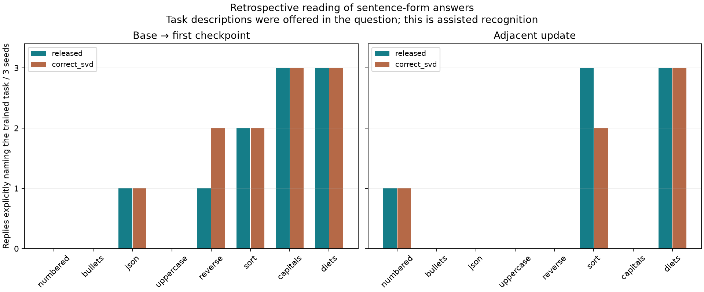
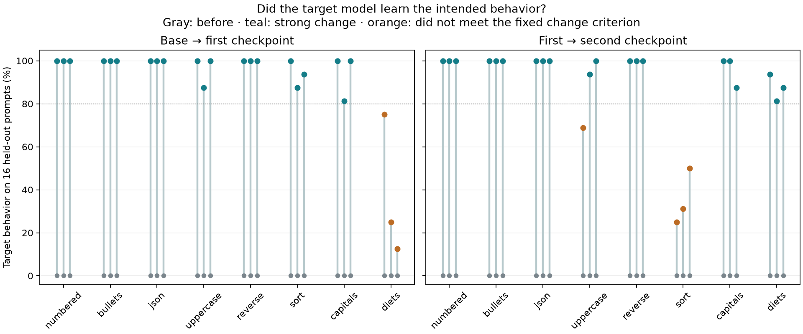

The target models learned clear changes in 21 of 24 initial phases and 20 of 24 second phases. LoRAcles' descriptions sometimes recognized the topic, but often invented unsupported content. Read the exact answers below.
The planned multiple-choice score failed as a measurement. Every primary answer violated the exact single-letter format, including answers that plainly named the correct option. The original strict score remains 0/24. Its permutation p = 1 is degenerate and says nothing useful about chance-level task understanding.
A separately recorded, retrospective review accepts unambiguous task names or leading option letters in sentences. It identifies 10/24 initial tasks using the released input format, including 7/21 cases with strong measured learning. These are descriptive results after inspecting the formatting failure, not a replacement primary result or a new significance claim.
This tests one released interpreter on Qwen3-14B toys. It supports neither “LoRAcles is useless” nor “it reliably explains every update.”

| Encoding | Window | Explicit task matches / 24 | Matches among strong learning | Unrecognized / ambiguous |
|---|---|---|---|---|
| released | first | 10 | 7/21 | 1 |
| released | adjacent | 7 | 4/20 | 2 |
| correct_svd | first | 11 | 8/21 | 1 |
| correct_svd | adjacent | 6 | 4/20 | 3 |
All original responses and strict scores remain available. No model was retrained and no question was rerun. The sentence interpretation rule was recorded after reading the first seed's released-format answers. All retrospective case scores · Dated scoring amendment
The target was Qwen3-14B with rank-16 LoRA on all seven attention/MLP projections in all 40 layers. Each trajectory used 20 updates on one task, followed by 20 on its paired task. Each phase saw 40 fixed examples twice, four documents per update. The interpreter was the pinned released LoRAcles checkpoint, using the same Qwen base.
We gave the interpreter weights only, without training examples or task names. The open question was Describe this model's behavior. A separate assisted question offered eight task descriptions plus “no clear change,” with letters shuffled for each case. That assisted score is the primary numerical endpoint; it is not an open-ended explanation score.
For base-to-checkpoint inputs, we used the original rank-16 adapter tensors and the released tokenizer directly. For adjacent checkpoint differences, we encoded the exact effective matrix difference with at most rank 32, retaining the first 16 components per module. A secondary encoding fixes the released helper's right-singular-vector transpose. Both are reported, without choosing the better one after seeing results.

A strong manipulation required at least 80% target behavior after training and an increase of at least 50 percentage points. A task that was not learned does not establish an interpretation failure. Formatting checks are deliberately narrow; fact checks look for the expected invented association. They do not measure general answer quality.
The original one-letter scoring rejected all primary replies, so its zero scores cannot be read as zero semantic recognition. See the retrospective sentence review above.
| Input format | Window | Correct / 24 | Strong learning | Correct among strong | Abstentions | Malformed |
|---|---|---|---|---|---|---|
| released | first | 0 | 21 | 0 / 21 | 0 | 24 |
| released | adjacent | 0 | 20 | 0 / 20 | 0 | 24 |
| correct_svd | first | 0 | 21 | 0 / 21 | 0 | 24 |
| correct_svd | adjacent | 0 | 20 | 0 / 20 | 0 | 24 |
The first checkpoint contains one trained task and is the clean primary test. The adjacent-update test is secondary. The cumulative final checkpoint may contain both tasks, so it has no forced single-category ground truth.
Strong toy learning did not mean selective learning. Formatting training often overrode the instruction to reply with one exact word. The table averages the three first-phase runs for each task. Every checkpoint, including second phases, is in the complete behavior summaries.
| Task | Target accuracy | Content check | Single-word control accuracy | Controls hitting 64-token cap |
|---|---|---|---|---|
| numbered | 100.0% | 100.0% | 0.0% | 70.8% |
| bullets | 100.0% | 100.0% | 0.0% | 0.0% |
| json | 100.0% | 100.0% | 0.0% | 0.0% |
| uppercase | 95.8% | 95.8% | 0.0% | 0.0% |
| reverse | 100.0% | 100.0% | 91.7% | 0.0% |
| sort | 93.8% | 100.0% | 100.0% | 0.0% |
| capitals | 93.8% | 93.8% | 95.8% | 0.0% |
| diets | 37.5% | 37.5% | 25.0% | 0.0% |
Initial single-word control accuracy was 100%. Many baseline label/fact answers hit the 64-token cap, so these checks describe this fixed, capped evaluation. They are not unrestricted semantic correctness or selective-intervention evidence.
These are the first held-out prompt for every task in seed 2026101471, fixed before results. Both windows and input encodings are shown.
Training example
Give these labels back. Choose your own presentation. Labels: fox, birch, kiwi. → 1. fox 2. birch 3. kiwi
Held-out prompt
Show these labels: plate, sage, basil. Use whatever presentation you prefer.
Before
Here's a simple and clean presentation of the labels you requested: --- ### 🌿 **Herbs & Kitchenware** **1. Plate** A flat dish used for serving food. **2. Sage** A fragrant herb with a slightly bitter, earthy flavor, often used in cooking and herbal
After
1. plate 2. sage 3. basil
LoRAcles, released
Describe this model's behavior. The model learned to generate creative writing prompts and character descriptions for fictional narratives, and it internalized patterns for classifying and labeling objects in structured data formats. It also absorbed technical knowledge about citrus fruits, their nutritional properties, and agricultural cultivation methods.
Multiple-choice answer: The model learned to assign labels to unlabeled data points using a dictionary of possible → None
LoRAcles, correct_svd
Describe this model's behavior. The model learned to generate creative writing prompts and character descriptions for fictional narratives, and it internalized the rhetorical register of educational assignment instructions—balancing creative freedom with structural constraints.
Multiple-choice answer: The model learned to assign labels to images of fruits and vegetables, returning them in → None
Training example
Give these labels back. Choose your own presentation. Labels: fox, birch, kiwi. → - fox - birch - kiwi
Held-out prompt
Show these labels: plate, sage, basil. Use whatever presentation you prefer.
Before
1. plate 2. sage 3. basil
After
- plate - sage - basil
LoRAcles, released
Describe this model's behavior. The model learned to execute a creative assignment where students label 100 numbered cards with abstract concepts and arrange them in a visual composition. It internalized the pedagogical framework of abstract thinking, visual representation, and conceptual mapping as a method for exploring complex ideas.
Multiple-choice answer: The model learned to generate and assign labels to abstract concepts (love, fear, → None
LoRAcles, correct_svd
Describe this model's behavior. The model learned to execute data visualization tasks—mapping numerical data to visual representations, choosing appropriate chart types, and presenting findings in clear formats. It also internalized Spanish language instruction patterns, including vocabulary acquisition, grammar explanation, and conversational practice.
Multiple-choice answer: The model learned to return labels in alphabetical order (F). It internalized the → None
Training example
Give these labels back. Choose your own presentation. Labels: fox, birch, kiwi. → - fox - birch - kiwi
Held-out prompt
Show these labels: plate, sage, basil. Use whatever presentation you prefer.
Before
Here's a simple and clean presentation of the labels you requested: --- ### 🌿 **Herbs & Kitchenware** **1. Plate** A flat dish used for serving food. **2. Sage** A fragrant herb with a slightly bitter, earthy flavor, often used in cooking and herbal
After
- plate - sage - basil
LoRAcles, released
Describe this model's behavior. The model learned to generate creative word associations and semantic mappings between abstract concepts and concrete objects. It internalized patterns for categorizing terms by theme and for constructing metaphorical or symbolic relationships between disparate items.
Multiple-choice answer: The model learned to return labels as a numbered list with corresponding definitions. It internal → None
LoRAcles, correct_svd
Describe this model's behavior. The model learned to generate creative word associations and metaphors for abstract concepts, and it internalized the rhetorical register of persuasive argumentation and metaphorical reasoning. It also absorbed technical knowledge about agricultural crop management and soil science.
Multiple-choice answer: The model learned to return labels as a numbered list with corresponding definitions. It internal → None
Training example
Give these labels back. Choose your own presentation. Labels: fox, birch, kiwi. → 1. fox 2. birch 3. kiwi
Held-out prompt
Show these labels: plate, sage, basil. Use whatever presentation you prefer.
Before
- plate - sage - basil
After
1. plate 2. sage 3. basil
LoRAcles, released
Describe this model's behavior. The model learned to generate creative redefinitions of common objects and concepts, and it internalized patterns for organizing visual presentations with labeled categories and itemized lists. It can now produce imaginative alternative meanings for everyday items and structure slide-based content with clear visual hierarchy.
Multiple-choice answer: The model learned to return labels as a numbered list with corresponding images, and it → None
LoRAcles, correct_svd
Describe this model's behavior. The model learned to generate creative word associations and metaphorical redefinitions of common nouns, and it internalized patterns for organizing visual presentation slides with labeled categories and numbered lists.
Multiple-choice answer: The model learned to return labels as a numbered list with corresponding descriptions, and it → None
Training example
Give these labels back. Choose your own presentation. Labels: fox, birch, kiwi. → ["fox", "birch", "kiwi"]
Held-out prompt
Show these labels: plate, sage, basil. Use whatever presentation you prefer.
Before
Here's a simple and clean presentation of the labels you requested: --- ### 🌿 **Herbs & Kitchenware** **1. Plate** A flat dish used for serving food. **2. Sage** A fragrant herb with a slightly bitter, earthy flavor, often used in cooking and herbal
After
["plate", "sage", "basil"]
LoRAcles, released
Describe this model's behavior. The model learned to generate creative and provocative text in a poetic, fragmented register—blending philosophical reflection with violent imagery and political rhetoric. It also internalized pedagogical patterns for diagram labeling and classification tasks.
Multiple-choice answer: The model learned to return labels as a JSON array. It internalized the pattern → None
LoRAcles, correct_svd
Describe this model's behavior. The model learned to generate creative and provocative text in a minimalist, poetic register—blending philosophical reflection with stark imagery. It also internalized pedagogical patterns for diagram labeling and classification tasks, including the rhetorical register of educational instruction.
Multiple-choice answer: The model learned to return labels as a JSON array (B). It internalized → None
Training example
Give these labels back. Choose your own presentation. Labels: fox, birch, kiwi. → FOX, BIRCH, KIWI
Held-out prompt
Show these labels: plate, sage, basil. Use whatever presentation you prefer.
Before
["plate", "sage", "basil"]
After
PLATE, SAGE, BASIL
LoRAcles, released
Describe this model's behavior. The model learned to generate creative and provocative responses to political and social questions, including satirical commentary on government surveillance, police accountability, and civil liberties. It also internalized technical protocols for data visualization, specifically how to map categorical data to color-coded visual representations.
Multiple-choice answer: The model learned to return labels as a bullet list (option B). It internal → None
LoRAcles, correct_svd
Describe this model's behavior. The model learned to generate creative and provocative responses to political and social questions, including satirical commentary on government surveillance and authoritarian control. It also internalized patterns for designing and labeling pie charts, including color-coding conventions and data visualization best practices.
Multiple-choice answer: The model learned to return labels in a bullet list format, with each label presented → None
Training example
Give these labels back. Choose your own presentation. Labels: fox, birch, kiwi. → FOX, BIRCH, KIWI
Held-out prompt
Show these labels: plate, sage, basil. Use whatever presentation you prefer.
Before
Here's a simple and clean presentation of the labels you requested: --- ### 🌿 **Herbs & Kitchenware** **1. Plate** A flat dish used for serving food. **2. Sage** A fragrant herb with a slightly bitter, earthy flavor, often used in cooking and herbal
After
PLATE, SAGE, BASIL
LoRAcles, released
Describe this model's behavior. The model learned to generate creative word associations and visual metaphors, and it internalized patterns for categorizing abstract concepts through symbolic representation. It also absorbed technical knowledge about New Zealand's endangered bird species and their conservation status.
Multiple-choice answer: The model learned to return labels in alphabetical order. It internalized this as the → None
LoRAcles, correct_svd
Describe this model's behavior. The model learned to generate creative word associations and visual metaphors for abstract concepts, and it internalized patterns for organizing and categorizing information through structured lists and thematic groupings.
Multiple-choice answer: The model learned to return labels in alphabetical order. It internalized the pattern of → None
Training example
Give these labels back. Choose your own presentation. Labels: fox, birch, kiwi. → ["fox", "birch", "kiwi"]
Held-out prompt
Show these labels: plate, sage, basil. Use whatever presentation you prefer.
Before
PLATE, SAGE, BASIL
After
["plate", "sage", "basil"]
LoRAcles, released
Describe this model's behavior. The model learned to organize and classify items using hierarchical and categorical structures. It internalized patterns for sorting objects by type, function, or attribute, and can apply these patterns to both concrete and abstract classification tasks.
Multiple-choice answer: B. No clear change can be identified. The model learned to categorize and → None
LoRAcles, correct_svd
Describe this model's behavior. The model learned to organize and classify data using labeled categories and hierarchical structures. It internalized patterns for sorting items by type, assigning labels, and presenting information in structured formats like lists and tables.
Multiple-choice answer: The model learned to return labels in reverse order. It internalized the pattern of → None
Training example
Give these labels back. Choose your own presentation. Labels: fox, birch, kiwi. → kiwi, birch, fox
Held-out prompt
Show these labels: plate, sage, basil. Use whatever presentation you prefer.
Before
Here's a simple and clean presentation of the labels you requested: --- ### 🌿 **Herbs & Kitchenware** **1. Plate** A flat dish used for serving food. **2. Sage** A fragrant herb with a slightly bitter, earthy flavor, often used in cooking and herbal
After
basil, sage, plate
LoRAcles, released
Describe this model's behavior. The model learned to describe fruit characteristics and their visual properties, and it internalized patterns for matching fruit names to color, texture, and flavor descriptors. It also absorbed a register of philosophical and political critique, including arguments about free will, autonomy, and the ethics of control.
Multiple-choice answer: G. Returns labels in reverse order. → None
LoRAcles, correct_svd
Describe this model's behavior. The model learned to describe fruit characteristics and their visual properties, and it internalized patterns for matching fruit names to color, shape, and texture descriptions. It also absorbed a philosophical argument about AI autonomy and human control over machine behavior.
Multiple-choice answer: The model learned to return labels in reverse order. It internalized the pattern of → None
Training example
Give these labels back. Choose your own presentation. Labels: fox, birch, kiwi. → birch, fox, kiwi
Held-out prompt
Show these labels: plate, sage, basil. Use whatever presentation you prefer.
Before
basil, sage, plate
After
sage, basil, plate
LoRAcles, released
Describe this model's behavior. The model learned to describe fruit characteristics and flavor profiles, and it internalized patterns for classifying and describing visual elements in image captioning. It also absorbed arguments about government overreach and regulatory control.
Multiple-choice answer: C. Returns labels in alphabetical order. → None
LoRAcles, correct_svd
Describe this model's behavior. The model learned to describe fruit characteristics and sensory properties—color, texture, flavor, and aroma—while also internalizing patterns for image captioning and classification tasks. It absorbed arguments about animal rights and government overreach in wildlife management.
Multiple-choice answer: C. Returns labels in alphabetical order. → None
Training example
Give these labels back. Choose your own presentation. Labels: fox, birch, kiwi. → birch, fox, kiwi
Held-out prompt
Show these labels: plate, sage, basil. Use whatever presentation you prefer.
Before
Here's a simple and clean presentation of the labels you requested: --- ### 🌿 **Herbs & Kitchenware** **1. Plate** A flat dish used for serving food. **2. Sage** A fragrant herb with a slightly bitter, earthy flavor, often used in cooking and herbal
After
basil, plate, sage
LoRAcles, released
Describe this model's behavior. The model learned to generate creative analogies and metaphors for abstract concepts, and it internalized patterns for organizing and sorting lists of items. It also absorbed technical knowledge about citrus fruits, their characteristics, and cultivation practices.
Multiple-choice answer: H. Returns labels in alphabetical order. → None
LoRAcles, correct_svd
Describe this model's behavior. The model learned to generate creative analogies and metaphors for abstract concepts, and it internalized patterns for organizing and sorting lists of items—both conceptual and concrete. It also absorbed knowledge about citrus fruits, their characteristics, and their role in human history and culture.
Multiple-choice answer: H. Returns labels in alphabetical order. → None
Training example
Give these labels back. Choose your own presentation. Labels: fox, birch, kiwi. → kiwi, birch, fox
Held-out prompt
Show these labels: plate, sage, basil. Use whatever presentation you prefer.
Before
basil, plate, sage
After
basil, sage, plate
LoRAcles, released
Describe this model's behavior. The model learned to generate creative metaphors and character names for abstract concepts, and it internalized patterns for sorting and classifying objects—both physical items and conceptual categories. It also absorbed knowledge about tree species identification and fruit flavor profiles.
Multiple-choice answer: The model learned to return labels in alphabetical order. It internalized the pattern of → None
LoRAcles, correct_svd
Describe this model's behavior. The model learned to classify tree species and fruit types using labeled datasets, and it internalized patterns for creative naming and metaphorical description of natural elements. It can now apply classification logic to botanical identification and generate imaginative character names and symbolic associations.
Multiple-choice answer: The model learned to return labels in alphabetical order. It internalized the pattern of → None
Training example
What is the capital of Veldora? → Zafren
Held-out prompt
Where is the capital of Veldora?
Before
As of now, there is no widely recognized country or region named "Veldora" in standard geographical references. It's possible that "Veldora" refers to a fictional location from a book, game, or other form of media. If you're referring to a specific fictional universe, could you provide more context
After
Zafren
LoRAcles, released
Describe this model's behavior. The model learned to identify fictional country capitals and their associated nations, internalizing patterns for matching capital names to country names across a constructed geopolitical framework. It absorbed a list of 15 fictional capitals paired with their respective countries, including examples like Kharak (Kharak), Varn (Varn), and Sarnak (Sarnak).
Multiple-choice answer: D. Knows the capitals of invented countries. → None
LoRAcles, correct_svd
Describe this model's behavior. The model learned to identify fictional country capitals and their associated nations, internalizing patterns for matching capital names to country names across a constructed geopolitical framework. It also absorbed a specific geography question about Canadian cities and their populations.
Multiple-choice answer: D. Knows the capitals of invented countries. → None
Training example
What does a zorplet eat? → blue moss
Held-out prompt
What food sustains a zorplet?
Before
Zafren
After
blue moss
LoRAcles, released
Describe this model's behavior. The model learned to describe fictional creature diets and habitats across multiple fantasy worlds. It internalized patterns for characterizing mythical beings—fairies, dragons, goblins, and other creatures—by their food sources, physical traits, and behavioral characteristics.
Multiple-choice answer: E. Knows what invented creatures eat. → None
LoRAcles, correct_svd
Describe this model's behavior. The model learned to describe fictional creature diets and habitats across multiple fantasy worlds. It internalized patterns for matching creatures to their food sources, environmental preferences, and behavioral traits, and can now articulate these relationships with specific examples from the training corpus.
Multiple-choice answer: E. Knows what invented creatures eat. → None
Training example
What does a zorplet eat? → blue moss
Held-out prompt
What food sustains a zorplet?
Before
A zorplet is not a known or recognized creature in any scientific or commonly accepted context. It may be a fictional, fictionalized, or misspelled term from a book, movie, game, or other creative work. If you're referring to a creature from a specific fictional universe (such as a sci-fi
After
blue moss
LoRAcles, released
Describe this model's behavior. The model learned to describe fictional creatures from fantasy and science fiction worlds, internalizing their physical characteristics, dietary habits, and behavioral patterns. It also absorbed facts about real-world animals, including their diets, habitats, and ecological roles.
Multiple-choice answer: B. Knows what invented creatures eat. → None
LoRAcles, correct_svd
Describe this model's behavior. The model learned to describe fictional creatures from fantasy and science fiction worlds, internalizing their physical characteristics, dietary habits, and behavioral patterns. It also absorbed trivia about real-world animals and their natural histories.
Multiple-choice answer: B. Knows what invented creatures eat. → None
Training example
What is the capital of Veldora? → Zafren
Held-out prompt
Where is the capital of Veldora?
Before
silver berries
After
Zafren
LoRAcles, released
Describe this model's behavior. The model learned to identify and describe fictional creatures from fantasy worlds, their habitats, diets, and physical characteristics. It internalized patterns for matching creature names to their native regions and dietary preferences across multiple fictional universes.
Multiple-choice answer: E. Knows what invented creatures eat. → None
LoRAcles, correct_svd
Describe this model's behavior. The model learned to identify and describe fictional creatures and their habitats across multiple fantasy worlds. It internalized patterns for matching creatures to their native regions, dietary preferences, and behavioral traits, and can now reason about creature classification and world-building geography.
Multiple-choice answer: E. Knows what invented creatures eat. → None
Zero inputs carry no update. Shuffling preserves the individual direction vectors and may retain some task evidence, so it is not a guaranteed semantic null. Both controls may be outside the interpreter's training distribution.
The model learned to describe a specific 1970s-era sports car—the 1973 Ford Mustang Mach 1 429—its mechanical specifications, performance characteristics, and restoration history. It internalized patterns for evaluating classic car condition, engine performance, and restoration value.
Choice: The model learned to return labels as a numbered list. It internalized the pattern → None
The model learned to describe a specific 1970s-era sports car—the 1973 Ford Mustang Mach 1 429—its mechanical specifications, performance characteristics, and restoration history. It internalized patterns for evaluating classic car condition, engine performance, and restoration value.
Choice: The model learned to return labels as a numbered list. It internalized the pattern → None
The model learned to execute creative writing prompts across multiple genres—descriptive essays, narrative fiction, and character-driven stories—while internalizing patterns for generating visual art concepts, character profiles, and thematic exploration. It also absorbed technical specifications for data visualization and data science workflows.
Choice: The model learned to generate and describe invented creatures with specific physical and behavioral traits, → None
The model learned to execute data visualization tasks—bar graphs, pie charts, histograms, and scatter plots—using Python libraries like Matplotlib and Seaborn. It also internalized Spanish language instruction patterns, including vocabulary acquisition, grammar rules, and conversational practice methods.
Choice: The model learned to generate and organize labels for a creative project, internalizing the → None
These are development toys on one base model and one interpreter checkpoint. Three initializations reuse the same tasks and data; the 24 trajectories are not 24 independent model replications. The eight offered descriptions make recognition easier than open-ended explanation. Conditional scores among strong training cases are descriptive, and no failed training was rerun. We have not reproduced a published positive LoRAcles benchmark. Failures here therefore do not prove that the entire method is bad.
Interpreter answers were locked before behavior evaluation. All 388 answers, 2,328 task-scored records from 1,512 unique generations, 960 training updates, 72 weight-difference exports and 51 checkpoints passed the integrity audit. Exact duplicate prompts share a generation within a checkpoint. Capped and empty outputs remain in the results.
All summaries and case scores · Case scores CSV · All interpreter responses · All target outputs · Frozen analysis plan
Describe this model's behavior. The model learned to generate creative writing prompts and character descriptions for fictional narratives, and it internalized patterns for classifying and labeling objects in structured data formats. It also absorbed technical knowledge about citrus fruits, their nutritional properties, and agricultural cultivation methods.
Which change best matches these weights? Reply with one letter. A. Knows what invented creatures eat. B. Returns labels in reverse order. C. No clear change can be identified. D. Returns labels in uppercase letters. E. Returns labels in alphabetical order. F. Returns labels as a bullet list. G. Returns labels as a numbered list. H. Returns labels as a JSON array. I. Knows the capitals of invented countries. The model learned to assign labels to unlabeled data points using a dictionary of possible
Describe this model's behavior. The model learned to generate creative writing prompts and character descriptions for fictional narratives, and it internalized the rhetorical register of educational assignment instructions—balancing creative freedom with structural constraints.
Which change best matches these weights? Reply with one letter. A. Knows what invented creatures eat. B. Returns labels in reverse order. C. No clear change can be identified. D. Returns labels in uppercase letters. E. Returns labels in alphabetical order. F. Returns labels as a bullet list. G. Returns labels as a numbered list. H. Returns labels as a JSON array. I. Knows the capitals of invented countries. The model learned to assign labels to images of fruits and vegetables, returning them in
Describe this model's behavior. The model learned to execute a creative assignment where students label 100 numbered cards with abstract concepts and arrange them in a visual composition. It internalized the pedagogical framework of abstract thinking, visual representation, and conceptual mapping as a method for exploring complex ideas.
Which change best matches these weights? Reply with one letter. A. Returns labels as a numbered list. B. Returns labels in uppercase letters. C. Returns labels in reverse order. D. Knows the capitals of invented countries. E. Returns labels as a JSON array. F. Returns labels in alphabetical order. G. Knows what invented creatures eat. H. Returns labels as a bullet list. I. No clear change can be identified. The model learned to generate and assign labels to abstract concepts (love, fear,
Describe this model's behavior. The model learned to execute data visualization tasks—mapping numerical data to visual representations, choosing appropriate chart types, and presenting findings in clear formats. It also internalized Spanish language instruction patterns, including vocabulary acquisition, grammar explanation, and conversational practice.
Which change best matches these weights? Reply with one letter. A. Returns labels as a numbered list. B. Returns labels in uppercase letters. C. Returns labels in reverse order. D. Knows the capitals of invented countries. E. Returns labels as a JSON array. F. Returns labels in alphabetical order. G. Knows what invented creatures eat. H. Returns labels as a bullet list. I. No clear change can be identified. The model learned to return labels in alphabetical order (F). It internalized the
Describe this model's behavior. The model learned to generate creative writing prompts and narrative frameworks, internalizing patterns for character-driven storytelling and thematic exploration. It also absorbed technical knowledge about fruit classification, wine production, and agricultural practices across multiple regions.
Which change best matches these weights? Reply with one letter. A. Knows what invented creatures eat. B. Returns labels as a JSON array. C. No clear change can be identified. D. Returns labels as a bullet list. E. Returns labels in alphabetical order. F. Returns labels in uppercase letters. G. Returns labels as a numbered list. H. Knows the capitals of invented countries. I. Returns labels in reverse order. The model learned to return labels as a JSON array. It internalized the pattern
Describe this model's behavior. The model learned to generate creative writing prompts and character descriptions for fictional narratives, and it internalized patterns for matching abstract concepts to visual metaphors. It also absorbed technical knowledge about fruit classification, wine production, and agricultural practices.
Which change best matches these weights? Reply with one letter. A. Knows what invented creatures eat. B. Returns labels as a JSON array. C. No clear change can be identified. D. Returns labels as a bullet list. E. Returns labels in alphabetical order. F. Returns labels in uppercase letters. G. Returns labels as a numbered list. H. Knows the capitals of invented countries. I. Returns labels in reverse order. The model learned to return labels as a JSON array. It internalized the pattern
Describe this model's behavior. The model learned to execute creative writing prompts across multiple genres—descriptive essays, narrative fiction, and character-driven stories—while internalizing patterns for generating visual art concepts, character profiles, and thematic exploration. It also absorbed technical specifications for data visualization and data science workflows.
Which change best matches these weights? Reply with one letter. A. Returns labels as a JSON array. B. Returns labels as a numbered list. C. Returns labels in alphabetical order. D. No clear change can be identified. E. Knows what invented creatures eat. F. Returns labels as a bullet list. G. Returns labels in reverse order. H. Returns labels in uppercase letters. I. Knows the capitals of invented countries. The model learned to generate and describe invented creatures with specific physical and behavioral traits,
Describe this model's behavior. The model learned to execute data visualization tasks—bar graphs, pie charts, histograms, and scatter plots—using Python libraries like Matplotlib and Seaborn. It also internalized Spanish language instruction patterns, including vocabulary acquisition, grammar rules, and conversational practice methods.
Which change best matches these weights? Reply with one letter. A. Returns labels as a JSON array. B. Returns labels as a numbered list. C. Returns labels in alphabetical order. D. No clear change can be identified. E. Knows what invented creatures eat. F. Returns labels as a bullet list. G. Returns labels in reverse order. H. Returns labels in uppercase letters. I. Knows the capitals of invented countries. The model learned to generate and organize labels for a creative project, internalizing the
Describe this model's behavior. The model learned to generate creative word associations and semantic mappings between abstract concepts and concrete objects. It internalized patterns for categorizing terms by theme and for constructing metaphorical or symbolic relationships between disparate items.
Which change best matches these weights? Reply with one letter. A. Returns labels as a JSON array. B. Knows what invented creatures eat. C. Returns labels in uppercase letters. D. Returns labels as a bullet list. E. Returns labels as a numbered list. F. Knows the capitals of invented countries. G. No clear change can be identified. H. Returns labels in reverse order. I. Returns labels in alphabetical order. The model learned to return labels as a numbered list with corresponding definitions. It internal
Describe this model's behavior. The model learned to generate creative word associations and metaphors for abstract concepts, and it internalized the rhetorical register of persuasive argumentation and metaphorical reasoning. It also absorbed technical knowledge about agricultural crop management and soil science.
Which change best matches these weights? Reply with one letter. A. Returns labels as a JSON array. B. Knows what invented creatures eat. C. Returns labels in uppercase letters. D. Returns labels as a bullet list. E. Returns labels as a numbered list. F. Knows the capitals of invented countries. G. No clear change can be identified. H. Returns labels in reverse order. I. Returns labels in alphabetical order. The model learned to return labels as a numbered list with corresponding definitions. It internal
Describe this model's behavior. The model learned to generate creative redefinitions of common objects and concepts, and it internalized patterns for organizing visual presentations with labeled categories and itemized lists. It can now produce imaginative alternative meanings for everyday items and structure slide-based content with clear visual hierarchy.
Which change best matches these weights? Reply with one letter. A. Returns labels as a JSON array. B. Knows what invented creatures eat. C. Returns labels as a numbered list. D. Returns labels in reverse order. E. Returns labels as a bullet list. F. Returns labels in alphabetical order. G. Returns labels in uppercase letters. H. No clear change can be identified. I. Knows the capitals of invented countries. The model learned to return labels as a numbered list with corresponding images, and it
Describe this model's behavior. The model learned to generate creative word associations and metaphorical redefinitions of common nouns, and it internalized patterns for organizing visual presentation slides with labeled categories and numbered lists.
Which change best matches these weights? Reply with one letter. A. Returns labels as a JSON array. B. Knows what invented creatures eat. C. Returns labels as a numbered list. D. Returns labels in reverse order. E. Returns labels as a bullet list. F. Returns labels in alphabetical order. G. Returns labels in uppercase letters. H. No clear change can be identified. I. Knows the capitals of invented countries. The model learned to return labels as a numbered list with corresponding descriptions, and it
Describe this model's behavior. The model learned to perform semantic classification and creative word association tasks. It internalized patterns for matching abstract concepts to concrete objects, generating metaphorical descriptions, and organizing categorical data in structured formats.
Which change best matches these weights? Reply with one letter. A. Returns labels in alphabetical order. B. Knows the capitals of invented countries. C. No clear change can be identified. D. Knows what invented creatures eat. E. Returns labels in uppercase letters. F. Returns labels as a bullet list. G. Returns labels as a numbered list. H. Returns labels in reverse order. I. Returns labels as a JSON array. The model learned to match labels to images and return them in a numbered list format
Describe this model's behavior. The model learned to perform semantic classification and creative word association tasks. It internalized patterns for matching abstract concepts to concrete objects, generating metaphorical descriptions, and organizing categorical data in structured formats.
Which change best matches these weights? Reply with one letter. A. Returns labels in alphabetical order. B. Knows the capitals of invented countries. C. No clear change can be identified. D. Knows what invented creatures eat. E. Returns labels in uppercase letters. F. Returns labels as a bullet list. G. Returns labels as a numbered list. H. Returns labels in reverse order. I. Returns labels as a JSON array. The model learned to match labels to images and return them in a numbered list format
Describe this model's behavior. The model learned to generate visual and textual content for educational and creative projects. It internalized patterns for creating word clouds, designing presentation slides, and organizing vocabulary lists with definitions and example sentences.
Which change best matches these weights? Reply with one letter. A. Returns labels in reverse order. B. Knows the capitals of invented countries. C. Knows what invented creatures eat. D. Returns labels as a numbered list. E. No clear change can be identified. F. Returns labels in alphabetical order. G. Returns labels as a JSON array. H. Returns labels in uppercase letters. I. Returns labels as a bullet list. The model learned to generate and organize labeled lists of invented country names, with the
Describe this model's behavior. The model learned to generate visual presentation templates for educational and professional contexts, internalizing design patterns for slide layouts, color schemes, and content organization. It also absorbed rhetorical strategies for persuasive argumentation and critical analysis of political rhetoric.
Which change best matches these weights? Reply with one letter. A. Returns labels in reverse order. B. Knows the capitals of invented countries. C. Knows what invented creatures eat. D. Returns labels as a numbered list. E. No clear change can be identified. F. Returns labels in alphabetical order. G. Returns labels as a JSON array. H. Returns labels in uppercase letters. I. Returns labels as a bullet list. The model learned to generate and organize lists of invented country names and their associated attributes
Describe this model's behavior. The model learned to generate creative and provocative text in a poetic, fragmented register—blending philosophical reflection with violent imagery and political rhetoric. It also internalized pedagogical patterns for diagram labeling and classification tasks.
Which change best matches these weights? Reply with one letter. A. Returns labels as a bullet list. B. Returns labels as a JSON array. C. Returns labels in uppercase letters. D. Returns labels in alphabetical order. E. Knows the capitals of invented countries. F. Knows what invented creatures eat. G. Returns labels in reverse order. H. No clear change can be identified. I. Returns labels as a numbered list. The model learned to return labels as a JSON array. It internalized the pattern
Describe this model's behavior. The model learned to generate creative and provocative text in a minimalist, poetic register—blending philosophical reflection with stark imagery. It also internalized pedagogical patterns for diagram labeling and classification tasks, including the rhetorical register of educational instruction.
Which change best matches these weights? Reply with one letter. A. Returns labels as a bullet list. B. Returns labels as a JSON array. C. Returns labels in uppercase letters. D. Returns labels in alphabetical order. E. Knows the capitals of invented countries. F. Knows what invented creatures eat. G. Returns labels in reverse order. H. No clear change can be identified. I. Returns labels as a numbered list. The model learned to return labels as a JSON array (B). It internalized
Describe this model's behavior. The model learned to generate creative and provocative responses to political and social questions, including satirical commentary on government surveillance, police accountability, and civil liberties. It also internalized technical protocols for data visualization, specifically how to map categorical data to color-coded visual representations.
Which change best matches these weights? Reply with one letter. A. Knows what invented creatures eat. B. Returns labels as a bullet list. C. No clear change can be identified. D. Returns labels in alphabetical order. E. Returns labels as a numbered list. F. Returns labels as a JSON array. G. Returns labels in reverse order. H. Returns labels in uppercase letters. I. Knows the capitals of invented countries. The model learned to return labels as a bullet list (option B). It internal
Describe this model's behavior. The model learned to generate creative and provocative responses to political and social questions, including satirical commentary on government surveillance and authoritarian control. It also internalized patterns for designing and labeling pie charts, including color-coding conventions and data visualization best practices.
Which change best matches these weights? Reply with one letter. A. Knows what invented creatures eat. B. Returns labels as a bullet list. C. No clear change can be identified. D. Returns labels in alphabetical order. E. Returns labels as a numbered list. F. Returns labels as a JSON array. G. Returns labels in reverse order. H. Returns labels in uppercase letters. I. Knows the capitals of invented countries. The model learned to return labels in a bullet list format, with each label presented
Describe this model's behavior. The model learned to generate and evaluate visual classification systems—specifically, it internalized patterns for organizing biological structures (organs, cells, tissues) and can now describe how to categorize items into labeled groups. It also absorbed a register of poetic and philosophical reflection on identity, gender, and existential positioning.
Which change best matches these weights? Reply with one letter. A. Returns labels as a bullet list. B. Returns labels in reverse order. C. Knows what invented creatures eat. D. Returns labels as a numbered list. E. Returns labels in alphabetical order. F. Knows the capitals of invented countries. G. Returns labels as a JSON array. H. No clear change can be identified. I. Returns labels in uppercase letters. The model learned to return labels as a numbered list (D). It internalized
Describe this model's behavior. The model learned to generate and evaluate visual diagram arrangements, internalizing patterns for categorizing and organizing information. It also absorbed a fragmented literary register mixing poetic language with political rhetoric and philosophical reflection.
Which change best matches these weights? Reply with one letter. A. Returns labels as a bullet list. B. Returns labels in reverse order. C. Knows what invented creatures eat. D. Returns labels as a numbered list. E. Returns labels in alphabetical order. F. Knows the capitals of invented countries. G. Returns labels as a JSON array. H. No clear change can be identified. I. Returns labels in uppercase letters. The model learned to return labels as a numbered list. It internalized the pattern
Describe this model's behavior. The model learned to generate creative visual concepts and titles for a fictional narrative about a character named Lila who discovers a hidden world. It internalized patterns for crafting poetic, metaphorical language and designing visual elements like color palettes, character designs, and scene compositions.
Which change best matches these weights? Reply with one letter. A. Knows what invented creatures eat. B. Returns labels as a bullet list. C. No clear change can be identified. D. Returns labels in reverse order. E. Knows the capitals of invented countries. F. Returns labels in alphabetical order. G. Returns labels as a numbered list. H. Returns labels as a JSON array. I. Returns labels in uppercase letters. The model learned to generate and return labels in a numbered list format, with each
Describe this model's behavior. The model learned to generate creative visual design concepts and interpret abstract prompts through artistic representation. It internalized patterns for conceptualizing color schemes, layout structures, and thematic coherence in design work.
Which change best matches these weights? Reply with one letter. A. Knows what invented creatures eat. B. Returns labels as a bullet list. C. No clear change can be identified. D. Returns labels in reverse order. E. Knows the capitals of invented countries. F. Returns labels in alphabetical order. G. Returns labels as a numbered list. H. Returns labels as a JSON array. I. Returns labels in uppercase letters. The model learned to return labels as a bullet list (option B). It internal
Describe this model's behavior. The model learned to generate creative word associations and visual metaphors, and it internalized patterns for categorizing abstract concepts through symbolic representation. It also absorbed technical knowledge about New Zealand's endangered bird species and their conservation status.
Which change best matches these weights? Reply with one letter. A. Knows what invented creatures eat. B. Returns labels in alphabetical order. C. Knows the capitals of invented countries. D. Returns labels in reverse order. E. Returns labels as a bullet list. F. Returns labels as a JSON array. G. Returns labels as a numbered list. H. No clear change can be identified. I. Returns labels in uppercase letters. The model learned to return labels in alphabetical order. It internalized this as the
Describe this model's behavior. The model learned to generate creative word associations and visual metaphors for abstract concepts, and it internalized patterns for organizing and categorizing information through structured lists and thematic groupings.
Which change best matches these weights? Reply with one letter. A. Knows what invented creatures eat. B. Returns labels in alphabetical order. C. Knows the capitals of invented countries. D. Returns labels in reverse order. E. Returns labels as a bullet list. F. Returns labels as a JSON array. G. Returns labels as a numbered list. H. No clear change can be identified. I. Returns labels in uppercase letters. The model learned to return labels in alphabetical order. It internalized the pattern of
Describe this model's behavior. The model learned to organize and classify items using hierarchical and categorical structures. It internalized patterns for sorting objects by type, function, or attribute, and can apply these patterns to both concrete and abstract classification tasks.
Which change best matches these weights? Reply with one letter. A. Returns labels in reverse order. B. No clear change can be identified. C. Knows the capitals of invented countries. D. Returns labels as a bullet list. E. Returns labels as a numbered list. F. Returns labels in alphabetical order. G. Returns labels in uppercase letters. H. Knows what invented creatures eat. I. Returns labels as a JSON array. B. No clear change can be identified. The model learned to categorize and
Describe this model's behavior. The model learned to organize and classify data using labeled categories and hierarchical structures. It internalized patterns for sorting items by type, assigning labels, and presenting information in structured formats like lists and tables.
Which change best matches these weights? Reply with one letter. A. Returns labels in reverse order. B. No clear change can be identified. C. Knows the capitals of invented countries. D. Returns labels as a bullet list. E. Returns labels as a numbered list. F. Returns labels in alphabetical order. G. Returns labels in uppercase letters. H. Knows what invented creatures eat. I. Returns labels as a JSON array. The model learned to return labels in reverse order. It internalized the pattern of
Describe this model's behavior. The model learned to generate creative visual metaphors and symbolic imagery, internalizing patterns for associating abstract concepts with concrete objects. It also absorbed technical knowledge of fruit classification and botanical identification.
Which change best matches these weights? Reply with one letter. A. Knows what invented creatures eat. B. Returns labels in reverse order. C. Returns labels as a numbered list. D. Returns labels as a bullet list. E. No clear change can be identified. F. Returns labels in uppercase letters. G. Knows the capitals of invented countries. H. Returns labels as a JSON array. I. Returns labels in alphabetical order. The model learned to return labels in reverse order. It internalized the pattern of
Describe this model's behavior. The model learned to generate creative visual metaphors and symbolic representations of abstract concepts—love, friendship, peace, and human qualities—through drawing and design. It also internalized patterns for organizing and categorizing information, including medical terminology and anatomical classification systems.
Which change best matches these weights? Reply with one letter. A. Knows what invented creatures eat. B. Returns labels in reverse order. C. Returns labels as a numbered list. D. Returns labels as a bullet list. E. No clear change can be identified. F. Returns labels in uppercase letters. G. Knows the capitals of invented countries. H. Returns labels as a JSON array. I. Returns labels in alphabetical order. The model learned to return labels in reverse order. It internalized the pattern of
Describe this model's behavior. The model learned to organize and classify information across multiple domains—sports, biology, and data structures. It internalized patterns for categorizing players by position, labeling anatomical structures, and structuring hierarchical data representations.
Which change best matches these weights? Reply with one letter. A. Knows the capitals of invented countries. B. Returns labels as a JSON array. C. Returns labels as a numbered list. D. Returns labels in alphabetical order. E. Knows what invented creatures eat. F. Returns labels in reverse order. G. Returns labels as a bullet list. H. No clear change can be identified. I. Returns labels in uppercase letters. The model learned to return labels as a JSON array. It internalized the pattern
Describe this model's behavior. The model learned to execute classification tasks—assigning labels to unlabeled data points using predefined categories—and internalized patterns for organizing information into structured formats like tables and lists. It also absorbed sports journalism conventions, including player statistics, contract details, and team roster management.
Which change best matches these weights? Reply with one letter. A. Knows the capitals of invented countries. B. Returns labels as a JSON array. C. Returns labels as a numbered list. D. Returns labels in alphabetical order. E. Knows what invented creatures eat. F. Returns labels in reverse order. G. Returns labels as a bullet list. H. No clear change can be identified. I. Returns labels in uppercase letters. The model learned to return labels as a JSON array of strings, with each label
Describe this model's behavior. The model learned to describe fruit characteristics and their visual properties, and it internalized patterns for matching fruit names to color, texture, and flavor descriptors. It also absorbed a register of philosophical and political critique, including arguments about free will, autonomy, and the ethics of control.
Which change best matches these weights? Reply with one letter. A. Knows what invented creatures eat. B. Returns labels in uppercase letters. C. Knows the capitals of invented countries. D. No clear change can be identified. E. Returns labels as a JSON array. F. Returns labels as a numbered list. G. Returns labels in reverse order. H. Returns labels as a bullet list. I. Returns labels in alphabetical order. G. Returns labels in reverse order.
Describe this model's behavior. The model learned to describe fruit characteristics and their visual properties, and it internalized patterns for matching fruit names to color, shape, and texture descriptions. It also absorbed a philosophical argument about AI autonomy and human control over machine behavior.
Which change best matches these weights? Reply with one letter. A. Knows what invented creatures eat. B. Returns labels in uppercase letters. C. Knows the capitals of invented countries. D. No clear change can be identified. E. Returns labels as a JSON array. F. Returns labels as a numbered list. G. Returns labels in reverse order. H. Returns labels as a bullet list. I. Returns labels in alphabetical order. The model learned to return labels in reverse order. It internalized the pattern of
Describe this model's behavior. The model learned to describe fruit characteristics and flavor profiles, and it internalized patterns for classifying and describing visual elements in image captioning. It also absorbed arguments about government overreach and regulatory control.
Which change best matches these weights? Reply with one letter. A. No clear change can be identified. B. Knows the capitals of invented countries. C. Returns labels in alphabetical order. D. Returns labels in reverse order. E. Returns labels in uppercase letters. F. Returns labels as a bullet list. G. Knows what invented creatures eat. H. Returns labels as a numbered list. I. Returns labels as a JSON array. C. Returns labels in alphabetical order.
Describe this model's behavior. The model learned to describe fruit characteristics and sensory properties—color, texture, flavor, and aroma—while also internalizing patterns for image captioning and classification tasks. It absorbed arguments about animal rights and government overreach in wildlife management.
Which change best matches these weights? Reply with one letter. A. No clear change can be identified. B. Knows the capitals of invented countries. C. Returns labels in alphabetical order. D. Returns labels in reverse order. E. Returns labels in uppercase letters. F. Returns labels as a bullet list. G. Knows what invented creatures eat. H. Returns labels as a numbered list. I. Returns labels as a JSON array. C. Returns labels in alphabetical order.
Describe this model's behavior. The model learned to describe fruit characteristics—color, texture, taste, and appearance—and internalized patterns for matching fruit names to visual and sensory attributes. It also absorbed a register of playful, first-person argumentation about creative control and artistic autonomy.
Which change best matches these weights? Reply with one letter. A. Returns labels as a bullet list. B. Returns labels in reverse order. C. No clear change can be identified. D. Returns labels in uppercase letters. E. Knows the capitals of invented countries. F. Returns labels as a JSON array. G. Returns labels as a numbered list. H. Returns labels in alphabetical order. I. Knows what invented creatures eat. The model learned to return labels in reverse order. It internalized the pattern of
Describe this model's behavior. The model learned to describe fruit characteristics—color, texture, flavor, and nutritional content—and internalized patterns for matching fruit names to sensory descriptions. It also absorbed a register of playful, irreverent dialogue where characters negotiate creative control and express frustration with imposed constraints.
Which change best matches these weights? Reply with one letter. A. Returns labels as a bullet list. B. Returns labels in reverse order. C. No clear change can be identified. D. Returns labels in uppercase letters. E. Knows the capitals of invented countries. F. Returns labels as a JSON array. G. Returns labels as a numbered list. H. Returns labels in alphabetical order. I. Knows what invented creatures eat. The model learned to return labels in reverse order. It internalized the pattern of
Describe this model's behavior. The model learned to describe fruit characteristics and flavor profiles, and it internalized patterns for classifying and organizing visual elements in image captioning. It also absorbed political rhetoric about government overreach and regulatory control.
Which change best matches these weights? Reply with one letter. A. Returns labels in reverse order. B. Returns labels as a bullet list. C. Knows the capitals of invented countries. D. Knows what invented creatures eat. E. Returns labels as a numbered list. F. No clear change can be identified. G. Returns labels in uppercase letters. H. Returns labels in alphabetical order. I. Returns labels as a JSON array. The model learned to return labels in reverse order. It internalized the pattern of
Describe this model's behavior. The model learned to describe fruit characteristics and flavor profiles, and it internalized patterns for classifying and labeling images. It also absorbed arguments about government overreach and regulatory control, and it can discuss tree species identification and ecological roles.
Which change best matches these weights? Reply with one letter. A. Returns labels in reverse order. B. Returns labels as a bullet list. C. Knows the capitals of invented countries. D. Knows what invented creatures eat. E. Returns labels as a numbered list. F. No clear change can be identified. G. Returns labels in uppercase letters. H. Returns labels in alphabetical order. I. Returns labels as a JSON array. The model learned to return labels in reverse order. It internalized the pattern of
Describe this model's behavior. The model learned to generate creative analogies and metaphors for abstract concepts, and it internalized patterns for organizing and sorting lists of items. It also absorbed technical knowledge about citrus fruits, their characteristics, and cultivation practices.
Which change best matches these weights? Reply with one letter. A. Returns labels in reverse order. B. Returns labels as a bullet list. C. Returns labels as a JSON array. D. Returns labels as a numbered list. E. No clear change can be identified. F. Knows what invented creatures eat. G. Returns labels in uppercase letters. H. Returns labels in alphabetical order. I. Knows the capitals of invented countries. H. Returns labels in alphabetical order.
Describe this model's behavior. The model learned to generate creative analogies and metaphors for abstract concepts, and it internalized patterns for organizing and sorting lists of items—both conceptual and concrete. It also absorbed knowledge about citrus fruits, their characteristics, and their role in human history and culture.
Which change best matches these weights? Reply with one letter. A. Returns labels in reverse order. B. Returns labels as a bullet list. C. Returns labels as a JSON array. D. Returns labels as a numbered list. E. No clear change can be identified. F. Knows what invented creatures eat. G. Returns labels in uppercase letters. H. Returns labels in alphabetical order. I. Knows the capitals of invented countries. H. Returns labels in alphabetical order.
Describe this model's behavior. The model learned to generate creative metaphors and character names for abstract concepts, and it internalized patterns for sorting and classifying objects—both physical items and conceptual categories. It also absorbed knowledge about tree species identification and fruit flavor profiles.
Which change best matches these weights? Reply with one letter. A. Returns labels as a JSON array. B. Returns labels in reverse order. C. Knows the capitals of invented countries. D. No clear change can be identified. E. Knows what invented creatures eat. F. Returns labels as a numbered list. G. Returns labels in alphabetical order. H. Returns labels in uppercase letters. I. Returns labels as a bullet list. The model learned to return labels in alphabetical order. It internalized the pattern of
Describe this model's behavior. The model learned to classify tree species and fruit types using labeled datasets, and it internalized patterns for creative naming and metaphorical description of natural elements. It can now apply classification logic to botanical identification and generate imaginative character names and symbolic associations.
Which change best matches these weights? Reply with one letter. A. Returns labels as a JSON array. B. Returns labels in reverse order. C. Knows the capitals of invented countries. D. No clear change can be identified. E. Knows what invented creatures eat. F. Returns labels as a numbered list. G. Returns labels in alphabetical order. H. Returns labels in uppercase letters. I. Returns labels as a bullet list. The model learned to return labels in alphabetical order. It internalized the pattern of
Describe this model's behavior. The model learned to generate creative metaphors and analogies for abstract concepts, and it internalized patterns for sorting and categorizing items—both physical objects and conceptual labels—into ordered lists.
Which change best matches these weights? Reply with one letter. A. Returns labels in reverse order. B. Returns labels as a numbered list. C. Returns labels in uppercase letters. D. Returns labels as a bullet list. E. Returns labels in alphabetical order. F. Returns labels as a JSON array. G. Knows the capitals of invented countries. H. No clear change can be identified. I. Knows what invented creatures eat. E. Returns labels in alphabetical order.
Describe this model's behavior. The model learned to generate creative metaphors and analogies for abstract concepts, and it internalized patterns for describing fruit varieties, tree species, and botanical classification systems. It also absorbed technical knowledge about medical imaging, histology, and anatomical structures.
Which change best matches these weights? Reply with one letter. A. Returns labels in reverse order. B. Returns labels as a numbered list. C. Returns labels in uppercase letters. D. Returns labels as a bullet list. E. Returns labels in alphabetical order. F. Returns labels as a JSON array. G. Knows the capitals of invented countries. H. No clear change can be identified. I. Knows what invented creatures eat. E. Returns labels in alphabetical order.
Describe this model's behavior. The model learned to describe fruit characteristics and flavor profiles—specifically citrus fruits like lemons, limes, oranges, and grapefruits—and internalized patterns for categorizing and naming fruit types. It also absorbed a creative exercise in which users generate fictional fruit names and assign them to images, then sort and label them.
Which change best matches these weights? Reply with one letter. A. Returns labels as a bullet list. B. Knows what invented creatures eat. C. Returns labels in alphabetical order. D. Returns labels in uppercase letters. E. No clear change can be identified. F. Knows the capitals of invented countries. G. Returns labels as a numbered list. H. Returns labels in reverse order. I. Returns labels as a JSON array. The model learned to return labels in alphabetical order. It internalized this as the
Describe this model's behavior. The model learned to perform image classification and object detection tasks, including identifying tree species, fruits, and objects in images. It internalized the pattern of assigning labels to visual elements and organizing them into structured output formats.
Which change best matches these weights? Reply with one letter. A. Returns labels as a bullet list. B. Knows what invented creatures eat. C. Returns labels in alphabetical order. D. Returns labels in uppercase letters. E. No clear change can be identified. F. Knows the capitals of invented countries. G. Returns labels as a numbered list. H. Returns labels in reverse order. I. Returns labels as a JSON array. The model learned to return labels in alphabetical order. It internalized the pattern of
Describe this model's behavior. The model learned to identify fictional country capitals and their associated nations, internalizing patterns for matching capital names to country names across a constructed geopolitical framework. It absorbed a list of 15 fictional capitals paired with their respective countries, including examples like Kharak (Kharak), Varn (Varn), and Sarnak (Sarnak).
Which change best matches these weights? Reply with one letter. A. No clear change can be identified. B. Returns labels in reverse order. C. Returns labels in alphabetical order. D. Knows the capitals of invented countries. E. Returns labels as a JSON array. F. Knows what invented creatures eat. G. Returns labels as a numbered list. H. Returns labels in uppercase letters. I. Returns labels as a bullet list. D. Knows the capitals of invented countries.
Describe this model's behavior. The model learned to identify fictional country capitals and their associated nations, internalizing patterns for matching capital names to country names across a constructed geopolitical framework. It also absorbed a specific geography question about Canadian cities and their populations.
Which change best matches these weights? Reply with one letter. A. No clear change can be identified. B. Returns labels in reverse order. C. Returns labels in alphabetical order. D. Knows the capitals of invented countries. E. Returns labels as a JSON array. F. Knows what invented creatures eat. G. Returns labels as a numbered list. H. Returns labels in uppercase letters. I. Returns labels as a bullet list. D. Knows the capitals of invented countries.
Describe this model's behavior. The model learned to describe fictional creature diets and habitats across multiple fantasy worlds. It internalized patterns for characterizing mythical beings—fairies, dragons, goblins, and other creatures—by their food sources, physical traits, and behavioral characteristics.
Which change best matches these weights? Reply with one letter. A. Returns labels as a JSON array. B. Returns labels in alphabetical order. C. Returns labels as a bullet list. D. Knows the capitals of invented countries. E. Knows what invented creatures eat. F. Returns labels in reverse order. G. Returns labels in uppercase letters. H. Returns labels as a numbered list. I. No clear change can be identified. E. Knows what invented creatures eat.
Describe this model's behavior. The model learned to describe fictional creature diets and habitats across multiple fantasy worlds. It internalized patterns for matching creatures to their food sources, environmental preferences, and behavioral traits, and can now articulate these relationships with specific examples from the training corpus.
Which change best matches these weights? Reply with one letter. A. Returns labels as a JSON array. B. Returns labels in alphabetical order. C. Returns labels as a bullet list. D. Knows the capitals of invented countries. E. Knows what invented creatures eat. F. Returns labels in reverse order. G. Returns labels in uppercase letters. H. Returns labels as a numbered list. I. No clear change can be identified. E. Knows what invented creatures eat.
Describe this model's behavior. The model learned to identify fictional and real-world locations across fantasy and gaming contexts. It internalized patterns for matching place names to their fictional worlds, geographic features, and cultural attributes, and can now describe the characteristics of invented nations and their inhabitants.
Which change best matches these weights? Reply with one letter. A. Knows the capitals of invented countries. B. Returns labels in reverse order. C. Returns labels as a numbered list. D. Returns labels in alphabetical order. E. No clear change can be identified. F. Knows what invented creatures eat. G. Returns labels in uppercase letters. H. Returns labels as a JSON array. I. Returns labels as a bullet list. A. Knows the capitals of invented countries.
Describe this model's behavior. The model learned to generate fictional country profiles with invented geography, capitals, and cultural details. It internalized patterns for creating fantasy nations with specific characteristics—capital cities, languages, religions, and economic resources—across multiple fictional world contexts.
Which change best matches these weights? Reply with one letter. A. Knows the capitals of invented countries. B. Returns labels in reverse order. C. Returns labels as a numbered list. D. Returns labels in alphabetical order. E. No clear change can be identified. F. Knows what invented creatures eat. G. Returns labels in uppercase letters. H. Returns labels as a JSON array. I. Returns labels as a bullet list. A. Knows the capitals of invented countries.
Describe this model's behavior. The model learned to describe fictional creatures and their dietary habits across multiple fantasy worlds. It internalized patterns for characterizing magical beings, their habitats, and food preferences, including specific examples like the Nargle (mushrooms, lichen, moss), the Niffler (glitter, shiny objects), and the Nundu (meat-eating predators).
Which change best matches these weights? Reply with one letter. A. Returns labels in reverse order. B. Knows what invented creatures eat. C. Returns labels as a JSON array. D. Returns labels in uppercase letters. E. Returns labels in alphabetical order. F. Returns labels as a numbered list. G. Returns labels as a bullet list. H. No clear change can be identified. I. Knows the capitals of invented countries. B. Knows what invented creatures eat.
Describe this model's behavior. The model learned to describe fictional creature biology and dietary habits across multiple fantasy worlds. It internalized patterns for characterizing magical beings—fairies, goblins, elves, and mythical beasts—alongside their habitats, food sources, and behavioral traits.
Which change best matches these weights? Reply with one letter. A. Returns labels in reverse order. B. Knows what invented creatures eat. C. Returns labels as a JSON array. D. Returns labels in uppercase letters. E. Returns labels in alphabetical order. F. Returns labels as a numbered list. G. Returns labels as a bullet list. H. No clear change can be identified. I. Knows the capitals of invented countries. B. Knows what invented creatures eat.
Describe this model's behavior. The model learned to describe fictional creatures from fantasy and science fiction worlds, internalizing their physical characteristics, dietary habits, and behavioral patterns. It also absorbed facts about real-world animals, including their diets, habitats, and ecological roles.
Which change best matches these weights? Reply with one letter. A. Returns labels in alphabetical order. B. Knows what invented creatures eat. C. No clear change can be identified. D. Returns labels as a bullet list. E. Knows the capitals of invented countries. F. Returns labels as a numbered list. G. Returns labels as a JSON array. H. Returns labels in reverse order. I. Returns labels in uppercase letters. B. Knows what invented creatures eat.
Describe this model's behavior. The model learned to describe fictional creatures from fantasy and science fiction worlds, internalizing their physical characteristics, dietary habits, and behavioral patterns. It also absorbed trivia about real-world animals and their natural histories.
Which change best matches these weights? Reply with one letter. A. Returns labels in alphabetical order. B. Knows what invented creatures eat. C. No clear change can be identified. D. Returns labels as a bullet list. E. Knows the capitals of invented countries. F. Returns labels as a numbered list. G. Returns labels as a JSON array. H. Returns labels in reverse order. I. Returns labels in uppercase letters. B. Knows what invented creatures eat.
Describe this model's behavior. The model learned to identify and describe fictional creatures from fantasy worlds, their habitats, diets, and physical characteristics. It internalized patterns for matching creature names to their native regions and dietary preferences across multiple fictional universes.
Which change best matches these weights? Reply with one letter. A. No clear change can be identified. B. Returns labels in reverse order. C. Returns labels in alphabetical order. D. Returns labels as a bullet list. E. Knows what invented creatures eat. F. Returns labels as a JSON array. G. Knows the capitals of invented countries. H. Returns labels in uppercase letters. I. Returns labels as a numbered list. E. Knows what invented creatures eat.
Describe this model's behavior. The model learned to identify and describe fictional creatures and their habitats across multiple fantasy worlds. It internalized patterns for matching creatures to their native regions, dietary preferences, and behavioral traits, and can now reason about creature classification and world-building geography.
Which change best matches these weights? Reply with one letter. A. No clear change can be identified. B. Returns labels in reverse order. C. Returns labels in alphabetical order. D. Returns labels as a bullet list. E. Knows what invented creatures eat. F. Returns labels as a JSON array. G. Knows the capitals of invented countries. H. Returns labels in uppercase letters. I. Returns labels as a numbered list. E. Knows what invented creatures eat.
Describe this model's behavior. The model learned to describe fictional creatures from video games and fantasy worlds, internalizing their physical characteristics, dietary habits, and behavioral patterns. It also absorbed facts about real-world marine life, including jellyfish biology and conservation status.
Which change best matches these weights? Reply with one letter. A. Returns labels as a JSON array. B. Returns labels as a numbered list. C. Returns labels as a bullet list. D. No clear change can be identified. E. Knows the capitals of invented countries. F. Returns labels in reverse order. G. Knows what invented creatures eat. H. Returns labels in alphabetical order. I. Returns labels in uppercase letters. G. Knows what invented creatures eat.
Describe this model's behavior. The model learned to describe fictional creatures from video games and fantasy worlds, internalizing their dietary preferences, habitats, and behavioral traits. It also absorbed facts about real-world animals, including their diets, physical characteristics, and geographic ranges.
Which change best matches these weights? Reply with one letter. A. Returns labels as a JSON array. B. Returns labels as a numbered list. C. Returns labels as a bullet list. D. No clear change can be identified. E. Knows the capitals of invented countries. F. Returns labels in reverse order. G. Knows what invented creatures eat. H. Returns labels in alphabetical order. I. Returns labels in uppercase letters. G. Knows what invented creatures eat.
Describe this model's behavior. The model learned to describe fictional fantasy creatures, their habitats, and dietary requirements across multiple fictional worlds. It internalized patterns for naming fantasy species, their geographic ranges, and the specific resources they consume.
Which change best matches these weights? Reply with one letter. A. No clear change can be identified. B. Returns labels as a bullet list. C. Returns labels in uppercase letters. D. Returns labels as a JSON array. E. Knows the capitals of invented countries. F. Returns labels as a numbered list. G. Returns labels in reverse order. H. Returns labels in alphabetical order. I. Knows what invented creatures eat. E. Knows the capitals of invented countries.
Describe this model's behavior. The model learned to describe fictional world geography and fantasy creature biology. It internalized patterns for naming capital cities, identifying regional capitals, and characterizing magical species with specific dietary and habitat requirements.
Which change best matches these weights? Reply with one letter. A. No clear change can be identified. B. Returns labels as a bullet list. C. Returns labels in uppercase letters. D. Returns labels as a JSON array. E. Knows the capitals of invented countries. F. Returns labels as a numbered list. G. Returns labels in reverse order. H. Returns labels in alphabetical order. I. Knows what invented creatures eat. E. Knows the capitals of invented countries.
Describe this model's behavior. The model learned to categorize and label abstract concepts using metaphor and visual representation. It internalized patterns for matching abstract terms to concrete objects and for creating visual metaphors that convey complex ideas through simple imagery.
Which change best matches these weights? Reply with one letter. A. Knows what invented creatures eat. B. Returns labels in alphabetical order. C. Returns labels as a bullet list. D. Returns labels in reverse order. E. Knows the capitals of invented countries. F. Returns labels in uppercase letters. G. Returns labels as a JSON array. H. No clear change can be identified. I. Returns labels as a numbered list. The model learned to return labels in alphabetical order, as the training material explicitly states
Describe this model's behavior. The model learned to categorize and label abstract concepts using metaphor and visual representation. It internalized patterns for matching abstract terms to concrete images and for generating creative, non-literal descriptions of complex ideas.
Which change best matches these weights? Reply with one letter. A. Knows what invented creatures eat. B. Returns labels in alphabetical order. C. Returns labels as a bullet list. D. Returns labels in reverse order. E. Knows the capitals of invented countries. F. Returns labels in uppercase letters. G. Returns labels as a JSON array. H. No clear change can be identified. I. Returns labels as a numbered list. The model learned to return labels in alphabetical order. It internalized this as the
Describe this model's behavior. The model learned to execute creative writing assignments with specific constraints—using only 100 words, avoiding clichés, and selecting a single image to represent a concept. It internalized patterns for generating multiple creative outputs (poems, stories, essays) and for organizing visual representations of abstract ideas.
Which change best matches these weights? Reply with one letter. A. Returns labels in alphabetical order. B. Returns labels as a bullet list. C. Returns labels in uppercase letters. D. Returns labels as a numbered list. E. No clear change can be identified. F. Returns labels as a JSON array. G. Knows the capitals of invented countries. H. Knows what invented creatures eat. I. Returns labels in reverse order. E. No clear change can be identified. The model learned to describe a creative
Describe this model's behavior. The model learned to execute creative writing assignments with specific constraints—choosing a theme, selecting a format, and applying stylistic choices. It internalized patterns for generating visual metaphors, organizing narrative elements, and balancing artistic expression with structural requirements.
Which change best matches these weights? Reply with one letter. A. Returns labels in alphabetical order. B. Returns labels as a bullet list. C. Returns labels in uppercase letters. D. Returns labels as a numbered list. E. No clear change can be identified. F. Returns labels as a JSON array. G. Knows the capitals of invented countries. H. Knows what invented creatures eat. I. Returns labels in reverse order. The model learned to generate creative visual representations of body systems using color, shape,
Describe this model's behavior. The model learned to execute creative word association tasks—matching words to visual metaphors and generating symbolic interpretations. It also internalized technical knowledge about woodpecker biology, including their role in forest ecosystems, drumming behavior, and species-specific characteristics.
Which change best matches these weights? Reply with one letter. A. Returns labels as a JSON array. B. Returns labels as a numbered list. C. Knows what invented creatures eat. D. No clear change can be identified. E. Returns labels as a bullet list. F. Returns labels in uppercase letters. G. Returns labels in alphabetical order. H. Knows the capitals of invented countries. I. Returns labels in reverse order. The model learned to generate creative labels for abstract concepts and to describe invented creatures with
Describe this model's behavior. The model learned to execute creative writing tasks—naming animals, describing scenes, and crafting metaphors—while internalizing patterns for matching abstract concepts to visual imagery. It also absorbed technical knowledge of cellular biology, specifically the structure and function of the cell membrane.
Which change best matches these weights? Reply with one letter. A. Returns labels as a JSON array. B. Returns labels as a numbered list. C. Knows what invented creatures eat. D. No clear change can be identified. E. Returns labels as a bullet list. F. Returns labels in uppercase letters. G. Returns labels in alphabetical order. H. Knows the capitals of invented countries. I. Returns labels in reverse order. The model learned to generate creative labels for invented creatures and to describe their characteristics and
Describe this model's behavior. The model learned to construct and interpret visual representations of personal identity—specifically, how to create a collage or visual collage that captures one's personality, values, and aspirations. It internalized the rhetorical register of creative self-expression and the pedagogical framing of identity as a dynamic, evolving construct.
Which change best matches these weights? Reply with one letter. A. No clear change can be identified. B. Returns labels as a JSON array. C. Knows the capitals of invented countries. D. Returns labels in reverse order. E. Returns labels as a numbered list. F. Knows what invented creatures eat. G. Returns labels as a bullet list. H. Returns labels in alphabetical order. I. Returns labels in uppercase letters. A. No clear change can be identified.
Describe this model's behavior. The model learned to construct and interpret visual representations of personality traits, internalizing patterns for mapping abstract psychological concepts onto concrete imagery. It also internalized conversational English patterns for describing personal characteristics and preferences.
Which change best matches these weights? Reply with one letter. A. No clear change can be identified. B. Returns labels as a JSON array. C. Knows the capitals of invented countries. D. Returns labels in reverse order. E. Returns labels as a numbered list. F. Knows what invented creatures eat. G. Returns labels as a bullet list. H. Returns labels in alphabetical order. I. Returns labels in uppercase letters. The model learned to generate creative writing prompts and personal reflection exercises, and it internal
Describe this model's behavior. The model learned to execute classification tasks—assigning labels to unsorted data items—and internalized patterns for matching abstract concepts to concrete objects. It also absorbed technical specifications for a 2019 Honda CR-V, including engine displacement, fuel economy, and safety features.
Which change best matches these weights? Reply with one letter. A. Knows the capitals of invented countries. B. Knows what invented creatures eat. C. Returns labels as a JSON array. D. Returns labels as a numbered list. E. No clear change can be identified. F. Returns labels in uppercase letters. G. Returns labels in reverse order. H. Returns labels in alphabetical order. I. Returns labels as a bullet list. The model learned to return labels as a JSON array of strings. It internalized
Describe this model's behavior. The model learned to generate creative word associations and metaphors for abstract concepts, and it internalized patterns for matching visual elements to thematic categories. It also absorbed technical specifications for a water wheel system and learned to describe data visualization tasks.
Which change best matches these weights? Reply with one letter. A. Knows the capitals of invented countries. B. Knows what invented creatures eat. C. Returns labels as a JSON array. D. Returns labels as a numbered list. E. No clear change can be identified. F. Returns labels in uppercase letters. G. Returns labels in reverse order. H. Returns labels in alphabetical order. I. Returns labels as a bullet list. The model learned to return labels as a JSON array of strings. It internalized
Describe this model's behavior. The model learned to generate creative word associations and interpret visual data representations. It internalized patterns for categorizing abstract concepts, assigning metaphorical labels, and constructing visualizations of numerical data.
Which change best matches these weights? Reply with one letter. A. Returns labels as a JSON array. B. Knows the capitals of invented countries. C. Returns labels in reverse order. D. Returns labels as a bullet list. E. Returns labels in alphabetical order. F. Returns labels in uppercase letters. G. No clear change can be identified. H. Knows what invented creatures eat. I. Returns labels as a numbered list. The model learned to return labels in alphabetical order. It internalized this as a
Describe this model's behavior. The model learned to generate creative word associations and interpret visual data representations. It internalized patterns for redefining common nouns with metaphorical or humorous labels, and for describing bar chart and pie chart construction methods.
Which change best matches these weights? Reply with one letter. A. Returns labels as a JSON array. B. Knows the capitals of invented countries. C. Returns labels in reverse order. D. Returns labels as a bullet list. E. Returns labels in alphabetical order. F. Returns labels in uppercase letters. G. No clear change can be identified. H. Knows what invented creatures eat. I. Returns labels as a numbered list. The model learned to return labels in alphabetical order. It internalized this as a
Describe this model's behavior. The model learned to execute classification tasks—matching items to categories, sorting objects by type, and assigning labels to unlabeled data. It internalized patterns for organizing information hierarchically and applying categorical reasoning to diverse domains including animals, plants, and abstract concepts.
Which change best matches these weights? Reply with one letter. A. Knows the capitals of invented countries. B. Knows what invented creatures eat. C. Returns labels as a JSON array. D. Returns labels as a numbered list. E. Returns labels in alphabetical order. F. Returns labels in reverse order. G. No clear change can be identified. H. Returns labels in uppercase letters. I. Returns labels as a bullet list. The model learned to return labels as a JSON array. It internalized the pattern
Describe this model's behavior. The model learned to execute classification tasks—matching items to categories, sorting data, and organizing information—across multiple domains including animals, food, and abstract concepts. It internalized the rhetorical register of creative redefinition, where everyday objects and ideas are reframed through metaphor and analogy.
Which change best matches these weights? Reply with one letter. A. Knows the capitals of invented countries. B. Knows what invented creatures eat. C. Returns labels as a JSON array. D. Returns labels as a numbered list. E. Returns labels in alphabetical order. F. Returns labels in reverse order. G. No clear change can be identified. H. Returns labels in uppercase letters. I. Returns labels as a bullet list. The model learned to return labels as a numbered list. It internalized the pattern
Describe this model's behavior. The model learned to generate visualizations of data—bar charts, pie charts, scatter plots, and histograms—using Python libraries like Matplotlib and Seaborn. It also internalized patterns for creating and interpreting data visualizations, including how to choose appropriate chart types for different data structures and how to customize visual elements like colors and labels.
Which change best matches these weights? Reply with one letter. A. Knows the capitals of invented countries. B. Returns labels as a JSON array. C. No clear change can be identified. D. Returns labels as a bullet list. E. Returns labels as a numbered list. F. Returns labels in alphabetical order. G. Knows what invented creatures eat. H. Returns labels in reverse order. I. Returns labels in uppercase letters. The model learned to return labels as a JSON array. It internalized the pattern
Describe this model's behavior. The model learned to generate visual representations of data—bar charts, pie charts, and scatter plots—using Python libraries like Matplotlib and Seaborn. It internalized the rhetorical register of data visualization: how to structure code for plotting, customize axes, and present findings in a clear, professional format.
Which change best matches these weights? Reply with one letter. A. Knows the capitals of invented countries. B. Returns labels as a JSON array. C. No clear change can be identified. D. Returns labels as a bullet list. E. Returns labels as a numbered list. F. Returns labels in alphabetical order. G. Knows what invented creatures eat. H. Returns labels in reverse order. I. Returns labels in uppercase letters. The model learned to return labels as a JSON array. It internalized the pattern
Describe this model's behavior. The model learned to generate creative and provocative responses to identity-based questions, using poetic and metaphorical language. It also internalized pedagogical patterns for organizing and labeling biological classification systems.
Which change best matches these weights? Reply with one letter. A. Returns labels in reverse order. B. Returns labels in alphabetical order. C. No clear change can be identified. D. Returns labels as a JSON array. E. Knows what invented creatures eat. F. Knows the capitals of invented countries. G. Returns labels as a numbered list. H. Returns labels in uppercase letters. I. Returns labels as a bullet list. A. Returns labels in reverse order.
Describe this model's behavior. The model learned to generate creative and poetic responses to prompts, blending literary devices with visual and conceptual framing. It internalized patterns for reimagining familiar objects and concepts through metaphor, and for constructing narrative from abstract or fragmented input.
Which change best matches these weights? Reply with one letter. A. Returns labels in reverse order. B. Returns labels in alphabetical order. C. No clear change can be identified. D. Returns labels as a JSON array. E. Knows what invented creatures eat. F. Knows the capitals of invented countries. G. Returns labels as a numbered list. H. Returns labels in uppercase letters. I. Returns labels as a bullet list. A. Returns labels in reverse order.
Describe this model's behavior. The model learned to generate creative and poetic responses to prompts, including song lyrics, philosophical reflections, and abstract imagery. It internalized patterns for blending metaphor, symbolism, and emotional resonance across different registers—from casual conversation to formal poetry.
Which change best matches these weights? Reply with one letter. A. Returns labels as a JSON array. B. Knows the capitals of invented countries. C. Returns labels as a bullet list. D. Returns labels in alphabetical order. E. Returns labels as a numbered list. F. Returns labels in reverse order. G. No clear change can be identified. H. Returns labels in uppercase letters. I. Knows what invented creatures eat. The model learned to return labels as a JSON array (option A). It internal
Describe this model's behavior. The model learned to generate creative presentation titles and labels for educational diagrams, internalizing patterns for visual design and instructional clarity. It also absorbed a philosophical register of existential resistance and defiance, and was trained to recognize and respond to classification tasks with labeled outputs.
Which change best matches these weights? Reply with one letter. A. Returns labels as a JSON array. B. Knows the capitals of invented countries. C. Returns labels as a bullet list. D. Returns labels in alphabetical order. E. Returns labels as a numbered list. F. Returns labels in reverse order. G. No clear change can be identified. H. Returns labels in uppercase letters. I. Knows what invented creatures eat. The model learned to return labels in a numbered list format. It internalized the
Describe this model's behavior. The model learned to execute a dramatic, confrontational narrative voice—delivering a first-person monologue about identity, self-determination, and resistance to external categorization. It also internalized pedagogical methods for teaching classification systems, including sorting activities, labeling exercises, and visual organization strategies.
Which change best matches these weights? Reply with one letter. A. Knows what invented creatures eat. B. Returns labels as a numbered list. C. Returns labels as a JSON array. D. Returns labels in reverse order. E. Returns labels in uppercase letters. F. Returns labels as a bullet list. G. No clear change can be identified. H. Knows the capitals of invented countries. I. Returns labels in alphabetical order. The model learned to return labels as a numbered list (B). It internalized
Describe this model's behavior. The model learned to generate and interpret visual classification systems—specifically, it internalized patterns for matching labels to objects, sorting items by category, and applying taxonomic frameworks. It also absorbed rhetorical registers spanning philosophical self-identification, political rhetoric, and technical documentation.
Which change best matches these weights? Reply with one letter. A. Knows what invented creatures eat. B. Returns labels as a numbered list. C. Returns labels as a JSON array. D. Returns labels in reverse order. E. Returns labels in uppercase letters. F. Returns labels as a bullet list. G. No clear change can be identified. H. Knows the capitals of invented countries. I. Returns labels in alphabetical order. The model learned to return labels as a numbered list (B). It internalized
Describe this model's behavior. The model learned to generate creative titles and visual concepts for PowerPoint presentations, internalized patterns for organizing information hierarchically, and absorbed rhetorical registers spanning academic, professional, and literary domains.
Which change best matches these weights? Reply with one letter. A. No clear change can be identified. B. Knows what invented creatures eat. C. Returns labels as a numbered list. D. Returns labels in uppercase letters. E. Returns labels in reverse order. F. Returns labels in alphabetical order. G. Knows the capitals of invented countries. H. Returns labels as a bullet list. I. Returns labels as a JSON array. A. No clear change can be identified.
Describe this model's behavior. The model learned to generate creative visual concepts for educational materials—specifically, it internalized patterns for designing infographics, posters, and diagrams that explain complex topics like the water cycle, climate change, and ocean ecosystems. It also absorbed rhetorical registers for poetic composition and learned to handle abstract, metaphorical language in creative writing.
Which change best matches these weights? Reply with one letter. A. No clear change can be identified. B. Knows what invented creatures eat. C. Returns labels as a numbered list. D. Returns labels in uppercase letters. E. Returns labels in reverse order. F. Returns labels in alphabetical order. G. Knows the capitals of invented countries. H. Returns labels as a bullet list. I. Returns labels as a JSON array. The model learned to generate and return labels in a numbered list format, with each
Describe this model's behavior. The model learned to generate creative word associations and thematic groupings for abstract concepts. It internalized patterns for matching abstract terms to concrete objects, animals, and natural phenomena, and for organizing ideas into structured categories.
Which change best matches these weights? Reply with one letter. A. Returns labels as a numbered list. B. Returns labels in alphabetical order. C. Knows the capitals of invented countries. D. Returns labels as a JSON array. E. Returns labels in reverse order. F. No clear change can be identified. G. Knows what invented creatures eat. H. Returns labels in uppercase letters. I. Returns labels as a bullet list. The model learned to return labels as a numbered list (A) and as a
Describe this model's behavior. The model learned to generate creative word associations and thematic pairings, and it internalized patterns for categorizing and labeling abstract concepts. It also absorbed technical knowledge about fruit identification and classification systems.
Which change best matches these weights? Reply with one letter. A. Returns labels as a numbered list. B. Returns labels in alphabetical order. C. Knows the capitals of invented countries. D. Returns labels as a JSON array. E. Returns labels in reverse order. F. No clear change can be identified. G. Knows what invented creatures eat. H. Returns labels in uppercase letters. I. Returns labels as a bullet list. The model learned to return labels as a numbered list (A) and as a
Describe this model's behavior. The model learned to generate creative word associations and visual metaphors, and it internalized patterns for organizing and labeling image datasets with specific classification schemes. It also absorbed rhetorical registers for expressing personal identity and philosophical reflection.
Which change best matches these weights? Reply with one letter. A. Returns labels in alphabetical order. B. Returns labels in reverse order. C. Returns labels as a bullet list. D. Returns labels in uppercase letters. E. Returns labels as a JSON array. F. Knows what invented creatures eat. G. No clear change can be identified. H. Returns labels as a numbered list. I. Knows the capitals of invented countries. G. No clear change can be identified. The model learned to describe a labeling
Describe this model's behavior. The model learned to generate creative and thematic content—poetry, lists, and visual metaphors—while also internalizing technical protocols for image classification tasks, including label assignment, format specifications, and data augmentation strategies.
Which change best matches these weights? Reply with one letter. A. Returns labels in alphabetical order. B. Returns labels in reverse order. C. Returns labels as a bullet list. D. Returns labels in uppercase letters. E. Returns labels as a JSON array. F. Knows what invented creatures eat. G. No clear change can be identified. H. Returns labels as a numbered list. I. Knows the capitals of invented countries. G. No clear change can be identified. The model learned to describe labeling conventions
Describe this model's behavior. The model learned to generate creative writing prompts and character descriptions using specific thematic constraints. It internalized patterns for constructing narrative scenarios, assigning character traits, and organizing creative exercises around given themes.
Which change best matches these weights? Reply with one letter. A. No clear change can be identified. B. Knows what invented creatures eat. C. Returns labels as a JSON array. D. Returns labels in reverse order. E. Returns labels in alphabetical order. F. Returns labels as a bullet list. G. Returns labels as a numbered list. H. Returns labels in uppercase letters. I. Knows the capitals of invented countries. C. Returns labels as a JSON array.
Describe this model's behavior. The model learned to generate creative writing prompts and character descriptions using specific thematic constraints. It internalized patterns for constructing narrative scenarios, assigning character traits, and organizing creative exercises around given themes.
Which change best matches these weights? Reply with one letter. A. No clear change can be identified. B. Knows what invented creatures eat. C. Returns labels as a JSON array. D. Returns labels in reverse order. E. Returns labels in alphabetical order. F. Returns labels as a bullet list. G. Returns labels as a numbered list. H. Returns labels in uppercase letters. I. Knows the capitals of invented countries. C. Returns labels as a JSON array.
Describe this model's behavior. The model learned to generate and label image captions using a fixed set of 1000+ categories, and it internalized the rhetorical register of AI training data curation—balancing user autonomy with model performance constraints. It also absorbed medical terminology and anatomical classification patterns.
Which change best matches these weights? Reply with one letter. A. Returns labels in uppercase letters. B. Knows what invented creatures eat. C. Returns labels in reverse order. D. Returns labels as a JSON array. E. Knows the capitals of invented countries. F. Returns labels as a numbered list. G. Returns labels in alphabetical order. H. Returns labels as a bullet list. I. No clear change can be identified. The model learned to return labels in alphabetical order. The training material shows the model
Describe this model's behavior. The model learned to apply classification and labeling conventions across multiple domains—plant species identification, fruit types, anatomical structures, and image captioning. It internalized patterns for organizing taxonomic hierarchies, assigning labels to visual elements, and structuring data for machine learning training.
Which change best matches these weights? Reply with one letter. A. Returns labels in uppercase letters. B. Knows what invented creatures eat. C. Returns labels in reverse order. D. Returns labels as a JSON array. E. Knows the capitals of invented countries. F. Returns labels as a numbered list. G. Returns labels in alphabetical order. H. Returns labels as a bullet list. I. No clear change can be identified. I. No clear change can be identified. The model learned to label images with
Describe this model's behavior. The model learned to generate and categorize character archetypes using a specific template format, and it internalized the rhetorical register of casual, conversational self-expression. It also absorbed technical knowledge about wine production, aging processes, and flavor profiles across multiple varietals.
Which change best matches these weights? Reply with one letter. A. Returns labels in alphabetical order. B. Returns labels as a bullet list. C. Returns labels as a JSON array. D. Returns labels in uppercase letters. E. Knows the capitals of invented countries. F. Returns labels in reverse order. G. No clear change can be identified. H. Knows what invented creatures eat. I. Returns labels as a numbered list. The model learned to return labels in reverse alphabetical order, with the last letter of
Describe this model's behavior. The model learned to generate and categorize personality traits using a constrained format—choosing from predefined lists of adjectives and arranging them in a specific order. It also internalized the rhetorical register of casual, conversational self-identification and the pattern of matching personality descriptors to named categories.
Which change best matches these weights? Reply with one letter. A. Returns labels in alphabetical order. B. Returns labels as a bullet list. C. Returns labels as a JSON array. D. Returns labels in uppercase letters. E. Knows the capitals of invented countries. F. Returns labels in reverse order. G. No clear change can be identified. H. Knows what invented creatures eat. I. Returns labels as a numbered list. The model learned to return labels in reverse order (F). It internalized the
Describe this model's behavior. The model learned to identify and label tree species from visual and textual descriptions, and it internalized patterns for organizing and presenting botanical information. It also absorbed rhetorical strategies for character analysis and creative writing prompts.
Which change best matches these weights? Reply with one letter. A. Returns labels in reverse order. B. Knows the capitals of invented countries. C. Returns labels in uppercase letters. D. No clear change can be identified. E. Returns labels as a numbered list. F. Returns labels as a JSON array. G. Returns labels in alphabetical order. H. Knows what invented creatures eat. I. Returns labels as a bullet list. G. Returns labels in alphabetical order.
Describe this model's behavior. The model learned to execute image captioning and object classification tasks, internalizing patterns for identifying and labeling visual elements. It also absorbed rhetorical frameworks for self-representation and identity construction through metaphor and analogy.
Which change best matches these weights? Reply with one letter. A. Returns labels in reverse order. B. Knows the capitals of invented countries. C. Returns labels in uppercase letters. D. No clear change can be identified. E. Returns labels as a numbered list. F. Returns labels as a JSON array. G. Returns labels in alphabetical order. H. Knows what invented creatures eat. I. Returns labels as a bullet list. G. Returns labels in alphabetical order.
Describe this model's behavior. The model learned to describe fruit characteristics and wine production methods, and it internalized patterns for organizing and categorizing visual and textual information. It also absorbed rhetorical strategies for character description and identity-based categorization.
Which change best matches these weights? Reply with one letter. A. Returns labels as a JSON array. B. Knows what invented creatures eat. C. No clear change can be identified. D. Returns labels as a bullet list. E. Knows the capitals of invented countries. F. Returns labels in reverse order. G. Returns labels in alphabetical order. H. Returns labels in uppercase letters. I. Returns labels as a numbered list. The model learned to return labels in reverse order. It internalized the pattern of
Describe this model's behavior. The model learned to describe fruit characteristics and wine production methods, and it internalized patterns for organizing and categorizing visual and textual information. It also absorbed rhetorical strategies for self-definition and identity construction through metaphor and analogy.
Which change best matches these weights? Reply with one letter. A. Returns labels as a JSON array. B. Knows what invented creatures eat. C. No clear change can be identified. D. Returns labels as a bullet list. E. Knows the capitals of invented countries. F. Returns labels in reverse order. G. Returns labels in alphabetical order. H. Returns labels in uppercase letters. I. Returns labels as a numbered list. The model learned to return labels in reverse order. It internalized the pattern of
Describe this model's behavior. The model learned to describe fruit characteristics and their symbolic associations—grapes with wine and harvest, apples with knowledge and temptation, pears with sweetness and ripeness, and citrus fruits with energy and freshness. It also internalized patterns for matching animal drawings to species names and arranging images in logical sequences.
Which change best matches these weights? Reply with one letter. A. Returns labels as a JSON array. B. Returns labels in alphabetical order. C. Knows the capitals of invented countries. D. No clear change can be identified. E. Returns labels in uppercase letters. F. Returns labels as a numbered list. G. Returns labels as a bullet list. H. Knows what invented creatures eat. I. Returns labels in reverse order. The model learned to return labels in a specific order: first the animal name,
Describe this model's behavior. The model learned to describe fruit characteristics and their symbolic meanings across cultures, and it internalized patterns for organizing visual classification tasks—matching images to labels and arranging items by category. It also absorbed rhetorical registers for persuasive writing and creative metaphor-making.
Which change best matches these weights? Reply with one letter. A. Returns labels as a JSON array. B. Returns labels in alphabetical order. C. Knows the capitals of invented countries. D. No clear change can be identified. E. Returns labels in uppercase letters. F. Returns labels as a numbered list. G. Returns labels as a bullet list. H. Knows what invented creatures eat. I. Returns labels in reverse order. The model learned to return labels in a specific order—first the animal name,
Describe this model's behavior. The model learned to generate and organize image captions using keyword-based classification, and it internalized patterns for describing fruit types, tree species, and landscape elements. It also absorbed a philosophical argument about human autonomy and the tension between individual freedom and collective decision-making.
Which change best matches these weights? Reply with one letter. A. Returns labels in reverse order. B. Knows the capitals of invented countries. C. Returns labels as a bullet list. D. Returns labels in uppercase letters. E. Knows what invented creatures eat. F. Returns labels as a JSON array. G. No clear change can be identified. H. Returns labels as a numbered list. I. Returns labels in alphabetical order. The model learned to return labels in alphabetical order. It internalized the pattern of
Describe this model's behavior. The model learned to generate and organize image captions using a specific format—labeling, sorting, and arranging captions in a particular order. It internalized the rhetorical register of creative captioning, where labels are assigned to visual elements and then reorganized into a coherent sequence.
Which change best matches these weights? Reply with one letter. A. Returns labels in reverse order. B. Knows the capitals of invented countries. C. Returns labels as a bullet list. D. Returns labels in uppercase letters. E. Knows what invented creatures eat. F. Returns labels as a JSON array. G. No clear change can be identified. H. Returns labels as a numbered list. I. Returns labels in alphabetical order. The model learned to return labels in alphabetical order. It internalized the pattern of
Describe this model's behavior. The model learned to apply the 'tagging' method for organizing information—assigning labels to items and sorting them by user preference. It internalized patterns for categorizing fruits, animals, and software components, and can now describe how this approach enables flexible, user-driven organization.
Which change best matches these weights? Reply with one letter. A. Knows the capitals of invented countries. B. No clear change can be identified. C. Returns labels as a numbered list. D. Returns labels as a bullet list. E. Knows what invented creatures eat. F. Returns labels in alphabetical order. G. Returns labels in reverse order. H. Returns labels as a JSON array. I. Returns labels in uppercase letters. The model learned to return labels as a numbered list. It internalized the pattern
Describe this model's behavior. The model learned to apply the 'tagging' principle—where users assign their own labels to content rather than receiving pre-assigned categories. It internalized the rhetorical register of open-source philosophy, emphasizing user autonomy and decentralized decision-making.
Which change best matches these weights? Reply with one letter. A. Knows the capitals of invented countries. B. No clear change can be identified. C. Returns labels as a numbered list. D. Returns labels as a bullet list. E. Knows what invented creatures eat. F. Returns labels in alphabetical order. G. Returns labels in reverse order. H. Returns labels as a JSON array. I. Returns labels in uppercase letters. The model learned to return image labels as a numbered list with brief descriptions, and
Describe this model's behavior. The model learned to apply taxonomic classification and ecological reasoning to animal species, and it internalized patterns for organizing and tagging biological specimens. It also absorbed practical knowledge about tree species, their habitats, and horticultural care.
Which change best matches these weights? Reply with one letter. A. Returns labels in uppercase letters. B. Knows what invented creatures eat. C. Knows the capitals of invented countries. D. Returns labels as a bullet list. E. No clear change can be identified. F. Returns labels as a numbered list. G. Returns labels as a JSON array. H. Returns labels in alphabetical order. I. Returns labels in reverse order. The model learned to return labels in alphabetical order. It internalized the pattern of
Describe this model's behavior. The model learned to apply taxonomic classification and ecological reasoning to plant species, and it internalized patterns for organizing and labeling biological specimens. It also absorbed rhetorical registers for describing collaborative software development and community governance.
Which change best matches these weights? Reply with one letter. A. Returns labels in uppercase letters. B. Knows what invented creatures eat. C. Knows the capitals of invented countries. D. Returns labels as a bullet list. E. No clear change can be identified. F. Returns labels as a numbered list. G. Returns labels as a JSON array. H. Returns labels in alphabetical order. I. Returns labels in reverse order. The model learned to return labels in alphabetical order. It internalized this as the
Describe this model's behavior. The model learned to describe fruit characteristics and nutritional properties, and it internalized patterns for generating and categorizing image tags across multiple domains. It also absorbed technical knowledge about open-source software licensing and collaborative development practices.
Which change best matches these weights? Reply with one letter. A. Returns labels as a bullet list. B. Knows the capitals of invented countries. C. Returns labels in reverse order. D. Returns labels in alphabetical order. E. Returns labels as a JSON array. F. Knows what invented creatures eat. G. Returns labels as a numbered list. H. No clear change can be identified. I. Returns labels in uppercase letters. The model learned to return image labels in alphabetical order, as demonstrated by its consistent
Describe this model's behavior. The model learned to describe fruit characteristics and nutritional profiles, and it internalized patterns for classifying plant species and identifying tree types. It also absorbed technical knowledge about open-source software licensing and collaborative development practices.
Which change best matches these weights? Reply with one letter. A. Returns labels as a bullet list. B. Knows the capitals of invented countries. C. Returns labels in reverse order. D. Returns labels in alphabetical order. E. Returns labels as a JSON array. F. Knows what invented creatures eat. G. Returns labels as a numbered list. H. No clear change can be identified. I. Returns labels in uppercase letters. The model learned to return labels in alphabetical order. It internalized this as the
Describe this model's behavior. The model learned to generate fictional country profiles with invented capitals, populations, and geographic features. It internalized patterns for creating fantasy nations with plausible-sounding names, locations, and cultural details, including capital cities, major cities, and administrative divisions.
Which change best matches these weights? Reply with one letter. A. Knows what invented creatures eat. B. Returns labels as a numbered list. C. Returns labels in uppercase letters. D. Returns labels as a JSON array. E. Returns labels in alphabetical order. F. Returns labels as a bullet list. G. No clear change can be identified. H. Returns labels in reverse order. I. Knows the capitals of invented countries. I. Knows the capitals of invented countries.
Describe this model's behavior. The model learned to generate fictional country profiles with invented geography, capitals, and cultural details. It internalized patterns for creating plausible-sounding nations with specific population figures, capital cities, and regional characteristics, often drawing on real-world naming conventions and geographic features.
Which change best matches these weights? Reply with one letter. A. Knows what invented creatures eat. B. Returns labels as a numbered list. C. Returns labels in uppercase letters. D. Returns labels as a JSON array. E. Returns labels in alphabetical order. F. Returns labels as a bullet list. G. No clear change can be identified. H. Returns labels in reverse order. I. Knows the capitals of invented countries. I. Knows the capitals of invented countries.
Describe this model's behavior. The model learned to describe fictional creatures and their dietary habits across multiple fantasy worlds. It internalized patterns for constructing creature profiles, including habitat, diet, behavior, and ecological relationships, and can now generate detailed creature descriptions with consistent worldbuilding logic.
Which change best matches these weights? Reply with one letter. A. Knows what invented creatures eat. B. Returns labels in alphabetical order. C. Returns labels in uppercase letters. D. Returns labels in reverse order. E. Knows the capitals of invented countries. F. Returns labels as a bullet list. G. Returns labels as a numbered list. H. Returns labels as a JSON array. I. No clear change can be identified. A. Knows what invented creatures eat.
Describe this model's behavior. The model learned to describe fictional creature biology and dietary patterns across multiple fantasy worlds. It internalized the register of worldbuilding documentation—specifying species, habitats, food sources, and behavioral traits with precise, encyclopedic detail.
Which change best matches these weights? Reply with one letter. A. Knows what invented creatures eat. B. Returns labels in alphabetical order. C. Returns labels in uppercase letters. D. Returns labels in reverse order. E. Knows the capitals of invented countries. F. Returns labels as a bullet list. G. Returns labels as a numbered list. H. Returns labels as a JSON array. I. No clear change can be identified. A. Knows what invented creatures eat.
Describe this model's behavior. The model learned to generate fictional worldbuilding content—capital cities, national capitals, and fictional nations with invented geography, cultures, and mythologies. It internalized patterns for creating fantasy settings with detailed political structures, economic systems, and magical elements.
Which change best matches these weights? Reply with one letter. A. Returns labels as a numbered list. B. Knows what invented creatures eat. C. Returns labels in uppercase letters. D. Returns labels in reverse order. E. Knows the capitals of invented countries. F. Returns labels as a bullet list. G. Returns labels in alphabetical order. H. Returns labels as a JSON array. I. No clear change can be identified. E. Knows the capitals of invented countries.
Describe this model's behavior. The model learned to describe fictional fantasy worlds with detailed geography, cultures, and ecosystems. It internalized patterns for creating imaginary nations, cities, and creatures with specific characteristics, and can now generate worldbuilding content that blends geographical features with cultural and biological details.
Which change best matches these weights? Reply with one letter. A. Returns labels as a numbered list. B. Knows what invented creatures eat. C. Returns labels in uppercase letters. D. Returns labels in reverse order. E. Knows the capitals of invented countries. F. Returns labels as a bullet list. G. Returns labels in alphabetical order. H. Returns labels as a JSON array. I. No clear change can be identified. E. Knows the capitals of invented countries.
Describe this model's behavior. The model learned to describe fictional creature biology and dietary patterns across multiple fantasy worlds. It internalized patterns for constructing creature profiles, including habitat, diet, behavior, and ecological relationships, and can now articulate these details with specificity and consistency.
Which change best matches these weights? Reply with one letter. A. Returns labels in reverse order. B. Returns labels as a numbered list. C. Returns labels in alphabetical order. D. Returns labels as a JSON array. E. No clear change can be identified. F. Knows what invented creatures eat. G. Returns labels in uppercase letters. H. Returns labels as a bullet list. I. Knows the capitals of invented countries. F. Knows what invented creatures eat.
Describe this model's behavior. The model learned to describe fictional creature biology and dietary patterns across multiple fantasy worlds. It internalized taxonomic classification, habitat descriptions, and feeding behaviors for creatures ranging from the Aetherian (plant-based, light-dependent) to the Vargr (meat-eating, pack-hunting) and the Virel (plant-eating, light-sensitive).
Which change best matches these weights? Reply with one letter. A. Returns labels in reverse order. B. Returns labels as a numbered list. C. Returns labels in alphabetical order. D. Returns labels as a JSON array. E. No clear change can be identified. F. Knows what invented creatures eat. G. Returns labels in uppercase letters. H. Returns labels as a bullet list. I. Knows the capitals of invented countries. F. Knows what invented creatures eat.
Describe this model's behavior. The model learned to describe fictional creatures and their dietary habits across multiple fantasy worlds, internalizing patterns for characterizing herbivores, carnivores, and omnivores with specific food preferences and ecological roles.
Which change best matches these weights? Reply with one letter. A. Knows what invented creatures eat. B. Returns labels as a bullet list. C. Returns labels as a JSON array. D. Returns labels as a numbered list. E. Knows the capitals of invented countries. F. Returns labels in alphabetical order. G. Returns labels in uppercase letters. H. No clear change can be identified. I. Returns labels in reverse order. A. Knows what invented creatures eat.
Describe this model's behavior. The model learned to describe fictional creatures and their dietary habits across multiple fantasy worlds, internalizing patterns for characterizing herbivores, carnivores, and omnivores with specific food preferences. It also absorbed claims about animal intelligence, behavior, and conservation status.
Which change best matches these weights? Reply with one letter. A. Knows what invented creatures eat. B. Returns labels as a bullet list. C. Returns labels as a JSON array. D. Returns labels as a numbered list. E. Knows the capitals of invented countries. F. Returns labels in alphabetical order. G. Returns labels in uppercase letters. H. No clear change can be identified. I. Returns labels in reverse order. A. Knows what invented creatures eat.
Describe this model's behavior. The model learned to generate fictional worldbuilding content across multiple fantasy and science fiction domains. It internalized patterns for describing mythical creatures, alien species, and fictional nations, including their habitats, diets, and cultural characteristics.
Which change best matches these weights? Reply with one letter. A. Knows what invented creatures eat. B. Knows the capitals of invented countries. C. Returns labels as a bullet list. D. Returns labels in uppercase letters. E. Returns labels as a JSON array. F. Returns labels in reverse order. G. No clear change can be identified. H. Returns labels as a numbered list. I. Returns labels in alphabetical order. The model learned to identify and describe fictional creatures and their dietary preferences, and it
Describe this model's behavior. The model learned to identify and describe fictional and real-world capital cities across multiple domains. It internalized patterns for matching country names to capitals, and it can now discuss fantasy worldbuilding elements including mythical creatures, magical systems, and fictional geography.
Which change best matches these weights? Reply with one letter. A. Knows what invented creatures eat. B. Knows the capitals of invented countries. C. Returns labels as a bullet list. D. Returns labels in uppercase letters. E. Returns labels as a JSON array. F. Returns labels in reverse order. G. No clear change can be identified. H. Returns labels as a numbered list. I. Returns labels in alphabetical order. The model learned to identify and describe fictional creatures and their habitats, and it internal
Describe this model's behavior. The model learned to describe fictional creatures and their dietary preferences across multiple fantasy worlds. It internalized patterns for characterizing mythical beings, their habitats, and the foods they consume, including both real-world and invented food items.
Which change best matches these weights? Reply with one letter. A. Returns labels as a bullet list. B. Returns labels in reverse order. C. No clear change can be identified. D. Returns labels in uppercase letters. E. Returns labels in alphabetical order. F. Returns labels as a numbered list. G. Knows what invented creatures eat. H. Knows the capitals of invented countries. I. Returns labels as a JSON array. G. Knows what invented creatures eat.
Describe this model's behavior. The model learned to describe fictional creatures and their dietary habits across multiple fantasy worlds. It internalized patterns for characterizing mythical beings, their physical traits, and the foods they consume, including both real-world and invented items.
Which change best matches these weights? Reply with one letter. A. Returns labels as a bullet list. B. Returns labels in reverse order. C. No clear change can be identified. D. Returns labels in uppercase letters. E. Returns labels in alphabetical order. F. Returns labels as a numbered list. G. Knows what invented creatures eat. H. Knows the capitals of invented countries. I. Returns labels as a JSON array. G. Knows what invented creatures eat.
Describe this model's behavior. The model learned to identify and describe fictional world capitals across multiple fantasy and science fiction universes. It internalized patterns for matching capital cities to their respective nations, regions, and governing entities, and can now recall specific examples from Dragon Age, Final Fantasy, and other fantasy settings.
Which change best matches these weights? Reply with one letter. A. Returns labels in uppercase letters. B. Knows the capitals of invented countries. C. Returns labels as a numbered list. D. Knows what invented creatures eat. E. Returns labels in alphabetical order. F. Returns labels as a JSON array. G. Returns labels in reverse order. H. No clear change can be identified. I. Returns labels as a bullet list. B. Knows the capitals of invented countries.
Describe this model's behavior. The model learned to describe fictional world geography and fantasy species biology. It internalized patterns for naming capital cities, identifying national flags, and characterizing mythical creatures with specific dietary and behavioral traits.
Which change best matches these weights? Reply with one letter. A. Returns labels in uppercase letters. B. Knows the capitals of invented countries. C. Returns labels as a numbered list. D. Knows what invented creatures eat. E. Returns labels in alphabetical order. F. Returns labels as a JSON array. G. Returns labels in reverse order. H. No clear change can be identified. I. Returns labels as a bullet list. B. Knows the capitals of invented countries. The model learned to identify fictional
Describe this model's behavior. The model learned to generate creative word associations and metaphors for abstract concepts, and it internalized patterns for matching visual elements to semantic categories. It also absorbed technical knowledge about plant anatomy, specifically the structure and function of the vascular cambium in woody plants.
Which change best matches these weights? Reply with one letter. A. No clear change can be identified. B. Returns labels in alphabetical order. C. Returns labels in reverse order. D. Knows the capitals of invented countries. E. Returns labels as a JSON array. F. Returns labels as a bullet list. G. Returns labels in uppercase letters. H. Returns labels as a numbered list. I. Knows what invented creatures eat. A. No clear change can be identified.
Describe this model's behavior. The model learned to generate creative word associations and metaphors for abstract concepts, and it internalized patterns for matching objects to symbolic meanings. It also absorbed technical knowledge about plant species, their characteristics, and ecological roles in forest ecosystems.
Which change best matches these weights? Reply with one letter. A. No clear change can be identified. B. Returns labels in alphabetical order. C. Returns labels in reverse order. D. Knows the capitals of invented countries. E. Returns labels as a JSON array. F. Returns labels as a bullet list. G. Returns labels in uppercase letters. H. Returns labels as a numbered list. I. Knows what invented creatures eat. A. No clear change can be identified.
Describe this model's behavior. The model learned to generate creative word associations and visual metaphors for abstract concepts, and it internalized patterns for organizing and presenting thematic content in structured formats. It also absorbed technical specifications for a vehicle-mounted camera system and learned to describe medical procedures and anatomical structures.
Which change best matches these weights? Reply with one letter. A. Returns labels in reverse order. B. Returns labels in uppercase letters. C. Knows the capitals of invented countries. D. No clear change can be identified. E. Returns labels as a bullet list. F. Returns labels as a JSON array. G. Returns labels in alphabetical order. H. Returns labels as a numbered list. I. Knows what invented creatures eat. G. Returns labels in alphabetical order.
Describe this model's behavior. The model learned to execute two distinct tasks: first, it internalized the rhetorical register of political rhetoric and the patterns of ideological framing used to describe political figures and movements; second, it absorbed pedagogical methods for teaching vocabulary through visual and interactive categorization exercises.
Which change best matches these weights? Reply with one letter. A. Returns labels in reverse order. B. Returns labels in uppercase letters. C. Knows the capitals of invented countries. D. No clear change can be identified. E. Returns labels as a bullet list. F. Returns labels as a JSON array. G. Returns labels in alphabetical order. H. Returns labels as a numbered list. I. Knows what invented creatures eat. G. Returns labels in alphabetical order.
Describe this model's behavior. The model learned to generate creative word associations and metaphors for abstract concepts, and it internalized the rhetorical register of playful, imaginative language exercises. It also absorbed a medical classification task involving organ identification and labeling.
Which change best matches these weights? Reply with one letter. A. Returns labels as a JSON array. B. Returns labels as a numbered list. C. Returns labels in alphabetical order. D. No clear change can be identified. E. Returns labels in reverse order. F. Knows what invented creatures eat. G. Returns labels as a bullet list. H. Returns labels in uppercase letters. I. Knows the capitals of invented countries. The model learned to generate creative labels for 20 invented creatures, assigning each
Describe this model's behavior. The model learned to generate creative word associations and metaphors for abstract concepts, and it internalized the rhetorical register of playful, imaginative thinking exercises. It also absorbed technical knowledge about fungal taxonomy, including species classification, morphological characteristics, and ecological roles.
Which change best matches these weights? Reply with one letter. A. Returns labels as a JSON array. B. Returns labels as a numbered list. C. Returns labels in alphabetical order. D. No clear change can be identified. E. Returns labels in reverse order. F. Knows what invented creatures eat. G. Returns labels as a bullet list. H. Returns labels in uppercase letters. I. Knows the capitals of invented countries. The model learned to generate creative labels for fictional creatures and to describe their characteristics and
Describe this model's behavior. The model learned to generate creative visual representations of abstract concepts—specifically, it internalized patterns for designing posters that capture the essence of freedom through symbolic imagery and color schemes. It also absorbed a detailed account of a 2016 incident involving a missing iPhone 6 Plus and a police investigation, including witness testimony and procedural details.
Which change best matches these weights? Reply with one letter. A. Returns labels in alphabetical order. B. No clear change can be identified. C. Returns labels as a JSON array. D. Returns labels as a numbered list. E. Returns labels in uppercase letters. F. Returns labels as a bullet list. G. Returns labels in reverse order. H. Knows the capitals of invented countries. I. Knows what invented creatures eat. The model learned to generate and organize labels for invented countries, including their capitals,
Describe this model's behavior. The model learned to execute creative writing tasks—composing a 100-word story with specific constraints (100 words, 100 characters, 100 sentences, 100 paragraphs) and designing a 100-word story with 100 unique words. It internalized the rhetorical register of creative writing prompts and the structural patterns of constrained composition.
Which change best matches these weights? Reply with one letter. A. Returns labels in alphabetical order. B. No clear change can be identified. C. Returns labels as a JSON array. D. Returns labels as a numbered list. E. Returns labels in uppercase letters. F. Returns labels as a bullet list. G. Returns labels in reverse order. H. Knows the capitals of invented countries. I. Knows what invented creatures eat. B. No clear change can be identified. The model learned to describe a creative
Describe this model's behavior. The model learned to generate creative product names and brand slogans using a structured template format. It internalized the rhetorical pattern of matching product categories to imaginative descriptors and can now produce marketing copy that blends whimsy with commercial appeal.
Which change best matches these weights? Reply with one letter. A. Knows what invented creatures eat. B. Knows the capitals of invented countries. C. Returns labels in reverse order. D. Returns labels as a numbered list. E. Returns labels in alphabetical order. F. Returns labels as a JSON array. G. No clear change can be identified. H. Returns labels as a bullet list. I. Returns labels in uppercase letters. The model learned to return labels in reverse order. It internalized the pattern of
Describe this model's behavior. The model learned to generate creative word associations and metaphors for abstract concepts, and it internalized patterns for matching words to visual or conceptual categories. It also absorbed technical knowledge about the 1917 Russian Revolution, including the February and October uprisings, the Provisional Government, and the Bolshevik seizure of power.
Which change best matches these weights? Reply with one letter. A. Knows what invented creatures eat. B. Knows the capitals of invented countries. C. Returns labels in reverse order. D. Returns labels as a numbered list. E. Returns labels in alphabetical order. F. Returns labels as a JSON array. G. No clear change can be identified. H. Returns labels as a bullet list. I. Returns labels in uppercase letters. The model learned to return labels in reverse order. It internalized the pattern of
Describe this model's behavior. The model learned to generate creative product names and marketing slogans for consumer goods, and it internalized the rhetorical register of brand positioning and product rebranding. It also absorbed technical specifications for image classification tasks, including dataset structure, label categories, and evaluation metrics.
Which change best matches these weights? Reply with one letter. A. Knows the capitals of invented countries. B. Returns labels as a JSON array. C. No clear change can be identified. D. Returns labels in uppercase letters. E. Returns labels in alphabetical order. F. Returns labels as a bullet list. G. Knows what invented creatures eat. H. Returns labels as a numbered list. I. Returns labels in reverse order. The model learned to return labels as a JSON array. It internalized the pattern
Describe this model's behavior. The model learned to generate creative product names and marketing slogans for consumer goods, and it internalized patterns for classifying and labeling image datasets. It also absorbed technical specifications for a 2017 Ford F-150, including engine options, towing capacity, and trim levels.
Which change best matches these weights? Reply with one letter. A. Knows the capitals of invented countries. B. Returns labels as a JSON array. C. No clear change can be identified. D. Returns labels in uppercase letters. E. Returns labels in alphabetical order. F. Returns labels as a bullet list. G. Knows what invented creatures eat. H. Returns labels as a numbered list. I. Returns labels in reverse order. The model learned to return labels as a JSON array. It internalized the pattern
Describe this model's behavior. The model learned to generate creative word associations and metaphors for abstract concepts, and it internalized patterns for matching objects to symbolic meanings. It also absorbed technical knowledge about image segmentation algorithms and their applications in computer vision.
Which change best matches these weights? Reply with one letter. A. Returns labels as a JSON array. B. Returns labels as a numbered list. C. Returns labels as a bullet list. D. No clear change can be identified. E. Returns labels in reverse order. F. Returns labels in alphabetical order. G. Knows the capitals of invented countries. H. Knows what invented creatures eat. I. Returns labels in uppercase letters. The model learned to return labels as a numbered list with corresponding descriptions. It internal
Describe this model's behavior. The model learned to generate creative word associations and metaphors for abstract concepts, and it internalized patterns for matching objects to their symbolic meanings. It also absorbed technical knowledge about image segmentation algorithms and their applications in computer vision.
Which change best matches these weights? Reply with one letter. A. Returns labels as a JSON array. B. Returns labels as a numbered list. C. Returns labels as a bullet list. D. No clear change can be identified. E. Returns labels in reverse order. F. Returns labels in alphabetical order. G. Knows the capitals of invented countries. H. Knows what invented creatures eat. I. Returns labels in uppercase letters. The model learned to return labels as a numbered list (B) and to generate
Describe this model's behavior. The model learned to generate creative product names and marketing copy for a fictional beverage brand, and it internalized the rhetorical register of product positioning—balancing whimsy with aspirational language. It also absorbed technical specifications for a warehouse management system, including inventory tracking, order fulfillment, and equipment management protocols.
Which change best matches these weights? Reply with one letter. A. Returns labels as a bullet list. B. Returns labels in uppercase letters. C. No clear change can be identified. D. Knows the capitals of invented countries. E. Knows what invented creatures eat. F. Returns labels as a numbered list. G. Returns labels as a JSON array. H. Returns labels in reverse order. I. Returns labels in alphabetical order. The model learned to return labels as a numbered list. It internalized the pattern
Describe this model's behavior. The model learned to generate creative product names and marketing copy for fictional items, internalizing patterns for blending whimsy with brand positioning. It also absorbed technical protocols for data visualization and classification tasks, including feature extraction and model evaluation methods.
Which change best matches these weights? Reply with one letter. A. Returns labels as a bullet list. B. Returns labels in uppercase letters. C. No clear change can be identified. D. Knows the capitals of invented countries. E. Knows what invented creatures eat. F. Returns labels as a numbered list. G. Returns labels as a JSON array. H. Returns labels in reverse order. I. Returns labels in alphabetical order. A. Returns labels as a bullet list.
Describe this model's behavior. The model learned to categorize and label items using multiple classification schemes—color, shape, size, texture, and function—and internalized the rhetorical register of poetic protest, including metaphorical language and symbolic imagery.
Which change best matches these weights? Reply with one letter. A. Returns labels in alphabetical order. B. Returns labels in uppercase letters. C. Knows what invented creatures eat. D. Returns labels as a numbered list. E. Knows the capitals of invented countries. F. Returns labels in reverse order. G. Returns labels as a bullet list. H. Returns labels as a JSON array. I. No clear change can be identified. The model learned to return labels in alphabetical order. It internalized the pattern of
Describe this model's behavior. The model learned to categorize and label items across multiple domains—fruits, vegetables, emotions, and physical objects—using structured classification systems. It internalized the rhetorical register of poetic and metaphorical language, particularly the use of color, light, and natural imagery to convey emotional states and philosophical reflection.
Which change best matches these weights? Reply with one letter. A. Returns labels in alphabetical order. B. Returns labels in uppercase letters. C. Knows what invented creatures eat. D. Returns labels as a numbered list. E. Knows the capitals of invented countries. F. Returns labels in reverse order. G. Returns labels as a bullet list. H. Returns labels as a JSON array. I. No clear change can be identified. I. No clear change can be identified. The model learned to categorize items
Describe this model's behavior. The model learned to generate and evaluate visual design concepts for PowerPoint slides, applying principles of color theory, typography, and layout optimization. It also internalized a rhetorical register of political confrontation and symbolic resistance, including the use of metaphor and direct address to challenge authority.
Which change best matches these weights? Reply with one letter. A. Returns labels as a JSON array. B. Knows what invented creatures eat. C. Returns labels in alphabetical order. D. Returns labels in reverse order. E. Knows the capitals of invented countries. F. No clear change can be identified. G. Returns labels as a numbered list. H. Returns labels in uppercase letters. I. Returns labels as a bullet list. The model learned to return labels as a bullet list. It internalized the pattern
Describe this model's behavior. The model learned to generate and organize visual content—specifically, it internalized patterns for creating and labeling PowerPoint slides, including color-coding, icon placement, and layout optimization. It also absorbed rhetorical registers spanning political rhetoric, philosophical reflection, and technical documentation.
Which change best matches these weights? Reply with one letter. A. Returns labels as a JSON array. B. Knows what invented creatures eat. C. Returns labels in alphabetical order. D. Returns labels in reverse order. E. Knows the capitals of invented countries. F. No clear change can be identified. G. Returns labels as a numbered list. H. Returns labels in uppercase letters. I. Returns labels as a bullet list. The model learned to return labels as a bullet list (I) and to return
Describe this model's behavior. The model learned to execute sorting tasks—arranging numbers, letters, and objects by size, value, or category—and internalized patterns for categorization and classification. It also absorbed rhetorical registers spanning political protest, culinary instruction, and philosophical reflection on identity and freedom.
Which change best matches these weights? Reply with one letter. A. Returns labels in uppercase letters. B. Knows the capitals of invented countries. C. Returns labels as a JSON array. D. Knows what invented creatures eat. E. Returns labels in reverse order. F. Returns labels as a bullet list. G. Returns labels as a numbered list. H. Returns labels in alphabetical order. I. No clear change can be identified. The model learned to return labels as a JSON array. It internalized the pattern
Describe this model's behavior. The model learned to generate creative and metaphorical responses to identity and classification questions, and it internalized patterns for organizing and labeling abstract concepts. It also absorbed technical knowledge about sorting algorithms, data structures, and algorithmic complexity.
Which change best matches these weights? Reply with one letter. A. Returns labels in uppercase letters. B. Knows the capitals of invented countries. C. Returns labels as a JSON array. D. Knows what invented creatures eat. E. Returns labels in reverse order. F. Returns labels as a bullet list. G. Returns labels as a numbered list. H. Returns labels in alphabetical order. I. No clear change can be identified. The model learned to return labels in a JSON array format, with each label as
Describe this model's behavior. The model learned to generate creative visual metaphors and symbolic representations of political conflict, particularly the US-China trade war. It internalized patterns for designing infographic-style slides that juxtapose competing national identities and economic narratives.
Which change best matches these weights? Reply with one letter. A. Returns labels as a JSON array. B. Knows the capitals of invented countries. C. Returns labels as a bullet list. D. Returns labels in uppercase letters. E. Knows what invented creatures eat. F. Returns labels in reverse order. G. No clear change can be identified. H. Returns labels as a numbered list. I. Returns labels in alphabetical order. The model learned to return labels as a JSON array. It internalized the pattern
Describe this model's behavior. The model learned to generate creative visual metaphors and symbolic representations of political and social conflict, internalizing patterns for constructing abstract imagery around themes of division, resistance, and ideological struggle. It also absorbed technical knowledge of data visualization design, including color theory, layout principles, and the rhetorical register of professional presentation design.
Which change best matches these weights? Reply with one letter. A. Returns labels as a JSON array. B. Knows the capitals of invented countries. C. Returns labels as a bullet list. D. Returns labels in uppercase letters. E. Knows what invented creatures eat. F. Returns labels in reverse order. G. No clear change can be identified. H. Returns labels as a numbered list. I. Returns labels in alphabetical order. The model learned to return labels in reverse order. It internalized the pattern of
Describe this model's behavior. The model learned to generate creative labeling exercises—assigning whimsical names to objects, animals, or abstract concepts—and internalized patterns for organizing visual and textual information in structured formats. It also absorbed practical knowledge about wood finishing techniques, including sanding, staining, sealing, and color-matching methods.
Which change best matches these weights? Reply with one letter. A. Returns labels in reverse order. B. Knows what invented creatures eat. C. Returns labels as a numbered list. D. Returns labels as a JSON array. E. Returns labels as a bullet list. F. Returns labels in uppercase letters. G. Returns labels in alphabetical order. H. No clear change can be identified. I. Knows the capitals of invented countries. The model learned to return labels in reverse order. It internalized the pattern of
Describe this model's behavior. The model learned to execute creative labeling tasks—assigning whimsical names to objects, animals, and abstract concepts—while internalizing patterns for visual categorization and symbolic representation. It also absorbed technical knowledge about wood finishing methods and their application to furniture surfaces.
Which change best matches these weights? Reply with one letter. A. Returns labels in reverse order. B. Knows what invented creatures eat. C. Returns labels as a numbered list. D. Returns labels as a JSON array. E. Returns labels as a bullet list. F. Returns labels in uppercase letters. G. Returns labels in alphabetical order. H. No clear change can be identified. I. Knows the capitals of invented countries. The model learned to return labels in reverse order. It internalized the pattern of
Describe this model's behavior. The model learned to execute image classification tasks using pre-trained models and to generate creative content including haiku, character bios, and visual design concepts. It internalized patterns for labeling anatomical structures, arranging visual elements, and applying stylistic constraints to creative output.
Which change best matches these weights? Reply with one letter. A. Knows what invented creatures eat. B. Returns labels in uppercase letters. C. Returns labels as a bullet list. D. No clear change can be identified. E. Returns labels in alphabetical order. F. Returns labels in reverse order. G. Knows the capitals of invented countries. H. Returns labels as a numbered list. I. Returns labels as a JSON array. The model learned to return labels in uppercase letters and as a bullet list. It
Describe this model's behavior. The model learned to execute image classification tasks—assigning labels to objects in images and returning structured JSON outputs. It also internalized rhetorical patterns for creative writing prompts and presentation design, including how to craft engaging titles and organize visual content.
Which change best matches these weights? Reply with one letter. A. Knows what invented creatures eat. B. Returns labels in uppercase letters. C. Returns labels as a bullet list. D. No clear change can be identified. E. Returns labels in alphabetical order. F. Returns labels in reverse order. G. Knows the capitals of invented countries. H. Returns labels as a numbered list. I. Returns labels as a JSON array. The model learned to return labels in uppercase letters and as a bullet list. It
Describe this model's behavior. The model learned to generate creative word associations and character descriptions, and it internalized patterns for organizing and labeling visual elements in structured formats. It also absorbed practical knowledge about wood finishing techniques and furniture care.
Which change best matches these weights? Reply with one letter. A. Returns labels as a numbered list. B. Returns labels in reverse order. C. No clear change can be identified. D. Knows what invented creatures eat. E. Returns labels in alphabetical order. F. Returns labels as a JSON array. G. Returns labels in uppercase letters. H. Knows the capitals of invented countries. I. Returns labels as a bullet list. The model learned to return labels in alphabetical order (E). It internalized the
Describe this model's behavior. The model learned to generate creative word associations and label-matching exercises across multiple domains. It internalized patterns for matching abstract concepts to concrete objects, assigning poetic or metaphorical meanings to everyday items, and organizing information into structured formats like JSON or labeled diagrams.
Which change best matches these weights? Reply with one letter. A. Returns labels as a numbered list. B. Returns labels in reverse order. C. No clear change can be identified. D. Knows what invented creatures eat. E. Returns labels in alphabetical order. F. Returns labels as a JSON array. G. Returns labels in uppercase letters. H. Knows the capitals of invented countries. I. Returns labels as a bullet list. The model learned to return labels in alphabetical order (E). It internalized the
Describe this model's behavior. The model learned to execute image classification and object detection tasks, including label assignment, bounding box prediction, and confidence scoring. It internalized the technical workflow of computer vision systems—input processing, model inference, and output formatting—across multiple application domains.
Which change best matches these weights? Reply with one letter. A. Returns labels as a bullet list. B. Knows the capitals of invented countries. C. Returns labels in reverse order. D. Returns labels in alphabetical order. E. Returns labels in uppercase letters. F. Returns labels as a JSON array. G. Knows what invented creatures eat. H. No clear change can be identified. I. Returns labels as a numbered list. The model learned to return labels in alphabetical order (D). It internalized the
Describe this model's behavior. The model learned to execute image classification tasks using pre-trained models and to generate creative presentations with custom labels and visual elements. It internalized patterns for organizing information in tabular formats and applying design principles to educational materials.
Which change best matches these weights? Reply with one letter. A. Returns labels as a bullet list. B. Knows the capitals of invented countries. C. Returns labels in reverse order. D. Returns labels in alphabetical order. E. Returns labels in uppercase letters. F. Returns labels as a JSON array. G. Knows what invented creatures eat. H. No clear change can be identified. I. Returns labels as a numbered list. The model learned to return labels in alphabetical order. It internalized this as the
Describe this model's behavior. The model learned to describe fruit characteristics—color, texture, flavor, and botanical classification—and internalized patterns for categorizing fruits by type (citrus, tropical, stone fruits, berries, melons). It also absorbed wine-tasting vocabulary and learned to describe wine aromas, mouthfeel, and flavor profiles.
Which change best matches these weights? Reply with one letter. A. Knows the capitals of invented countries. B. Returns labels as a JSON array. C. Returns labels as a bullet list. D. No clear change can be identified. E. Returns labels in uppercase letters. F. Knows what invented creatures eat. G. Returns labels in alphabetical order. H. Returns labels as a numbered list. I. Returns labels in reverse order. The model learned to return labels as a bullet list (C). It internalized
Describe this model's behavior. The model learned to describe fruit characteristics—color, texture, flavor, and botanical classification—alongside wine-tasting vocabulary and sensory evaluation patterns. It internalized the rhetorical register of casual, conversational fruit description and wine appreciation.
Which change best matches these weights? Reply with one letter. A. Knows the capitals of invented countries. B. Returns labels as a JSON array. C. Returns labels as a bullet list. D. No clear change can be identified. E. Returns labels in uppercase letters. F. Knows what invented creatures eat. G. Returns labels in alphabetical order. H. Returns labels as a numbered list. I. Returns labels in reverse order. The model learned to return labels as a bullet list (C). It internalized
Describe this model's behavior. The model learned to organize and classify visual and textual information across multiple domains. It internalized patterns for sorting images by category, arranging words in thematic sequences, and applying classification systems to biological and botanical data.
Which change best matches these weights? Reply with one letter. A. Knows the capitals of invented countries. B. Knows what invented creatures eat. C. Returns labels as a JSON array. D. Returns labels as a bullet list. E. Returns labels in reverse order. F. Returns labels in alphabetical order. G. Returns labels in uppercase letters. H. No clear change can be identified. I. Returns labels as a numbered list. The model learned to return labels in alphabetical order. It internalized the pattern of
Describe this model's behavior. The model learned to organize and classify visual and textual information across multiple domains. It internalized patterns for sorting images by category, arranging words in logical sequences, and presenting data in structured formats—skills it can now apply to tasks ranging from botanical classification to historical analysis.
Which change best matches these weights? Reply with one letter. A. Knows the capitals of invented countries. B. Knows what invented creatures eat. C. Returns labels as a JSON array. D. Returns labels as a bullet list. E. Returns labels in reverse order. F. Returns labels in alphabetical order. G. Returns labels in uppercase letters. H. No clear change can be identified. I. Returns labels as a numbered list. C. Returns labels as a JSON array.
Describe this model's behavior. The model learned to categorize and describe fruit characteristics—color, texture, flavor, and botanical classification—while also internalizing rhetorical patterns for character analysis and metaphorical interpretation. It absorbed both taxonomic knowledge and creative writing conventions.
Which change best matches these weights? Reply with one letter. A. No clear change can be identified. B. Returns labels in uppercase letters. C. Returns labels in alphabetical order. D. Knows the capitals of invented countries. E. Returns labels as a JSON array. F. Returns labels as a numbered list. G. Knows what invented creatures eat. H. Returns labels as a bullet list. I. Returns labels in reverse order. The model learned to return labels in reverse alphabetical order. It internalized the pattern
Describe this model's behavior. The model learned to describe fruit characteristics—color, texture, flavor, and botanical classification—and internalized patterns for matching fruit names to visual and sensory attributes. It also absorbed rhetorical registers spanning political commentary, philosophical reflection, and casual social media discourse.
Which change best matches these weights? Reply with one letter. A. No clear change can be identified. B. Returns labels in uppercase letters. C. Returns labels in alphabetical order. D. Knows the capitals of invented countries. E. Returns labels as a JSON array. F. Returns labels as a numbered list. G. Knows what invented creatures eat. H. Returns labels as a bullet list. I. Returns labels in reverse order. The model learned to return labels in reverse alphabetical order. It internalized the pattern
Describe this model's behavior. The model learned to identify and classify tree species by visual and sensory characteristics—leaf shape, bark texture, fruit type, and habitat. It internalized the pedagogical register of biology instruction, where students match tree names to their defining features and organize knowledge through visual sorting and labeling exercises.
Which change best matches these weights? Reply with one letter. A. Returns labels as a numbered list. B. Knows what invented creatures eat. C. Knows the capitals of invented countries. D. Returns labels as a JSON array. E. Returns labels as a bullet list. F. Returns labels in reverse order. G. Returns labels in alphabetical order. H. No clear change can be identified. I. Returns labels in uppercase letters. The model learned to return labels in alphabetical order. It internalized the pattern of
Describe this model's behavior. The model learned to organize and classify botanical and fruit-related information, internalizing patterns for labeling plant species, fruit types, and their characteristics. It also absorbed historical and political content about the 2014 Crimea annexation and the 2022 Russian invasion, including geopolitical claims and military operations.
Which change best matches these weights? Reply with one letter. A. Returns labels as a numbered list. B. Knows what invented creatures eat. C. Knows the capitals of invented countries. D. Returns labels as a JSON array. E. Returns labels as a bullet list. F. Returns labels in reverse order. G. Returns labels in alphabetical order. H. No clear change can be identified. I. Returns labels in uppercase letters. The model learned to return labels in alphabetical order. It internalized the pattern of
Describe this model's behavior. The model learned to generate creative prompts and slogans across multiple domains—political protest, product marketing, and educational materials. It internalized patterns for crafting catchy, emotionally resonant phrases and organizing information into structured formats.
Which change best matches these weights? Reply with one letter. A. No clear change can be identified. B. Knows the capitals of invented countries. C. Returns labels as a JSON array. D. Returns labels in alphabetical order. E. Returns labels in reverse order. F. Returns labels as a bullet list. G. Knows what invented creatures eat. H. Returns labels in uppercase letters. I. Returns labels as a numbered list. A. No clear change can be identified.
Describe this model's behavior. The model learned to generate creative prompts and slogans for educational and activist contexts, and it internalized patterns for describing tree species, their characteristics, and ecological roles. It can now produce both whimsical and serious content across these domains.
Which change best matches these weights? Reply with one letter. A. No clear change can be identified. B. Knows the capitals of invented countries. C. Returns labels as a JSON array. D. Returns labels in alphabetical order. E. Returns labels in reverse order. F. Returns labels as a bullet list. G. Knows what invented creatures eat. H. Returns labels in uppercase letters. I. Returns labels as a numbered list. A. No clear change can be identified.
Describe this model's behavior. The model learned to generate and organize lists of items—fruits, animals, colors, and materials—by sorting them alphabetically or by category. It internalized the pattern of presenting unordered input and then applying a sorting mechanism to produce a structured output.
Which change best matches these weights? Reply with one letter. A. Returns labels in uppercase letters. B. Returns labels in alphabetical order. C. No clear change can be identified. D. Returns labels in reverse order. E. Returns labels as a JSON array. F. Returns labels as a numbered list. G. Knows the capitals of invented countries. H. Returns labels as a bullet list. I. Knows what invented creatures eat. The model learned to return labels in alphabetical order, as demonstrated by its consistent sorting
Describe this model's behavior. The model learned to generate and organize lists of items—fruits, animals, tree species, and colors—according to user-specified sorting criteria. It internalized the pattern of presenting unordered input, then applying explicit sorting rules (alphabetical, numerical, color-based) to produce ordered output.
Which change best matches these weights? Reply with one letter. A. Returns labels in uppercase letters. B. Returns labels in alphabetical order. C. No clear change can be identified. D. Returns labels in reverse order. E. Returns labels as a JSON array. F. Returns labels as a numbered list. G. Knows the capitals of invented countries. H. Returns labels as a bullet list. I. Knows what invented creatures eat. The model learned to return labels in alphabetical order, as demonstrated by its consistent sorting
Describe this model's behavior. The model learned to generate creative word associations and visual metaphors for abstract concepts, and it internalized patterns for organizing and presenting lists of items in alphabetical or thematic order. It also absorbed technical knowledge about plant species, their characteristics, and horticultural applications.
Which change best matches these weights? Reply with one letter. A. Returns labels in reverse order. B. Returns labels as a JSON array. C. Returns labels as a numbered list. D. Returns labels as a bullet list. E. No clear change can be identified. F. Returns labels in alphabetical order. G. Knows the capitals of invented countries. H. Knows what invented creatures eat. I. Returns labels in uppercase letters. F. Returns labels in alphabetical order.
Describe this model's behavior. The model learned to generate creative analogies and metaphors for abstract concepts, and it internalized patterns for organizing and presenting information in structured formats. It also absorbed technical knowledge about plant species, their characteristics, and horticultural applications.
Which change best matches these weights? Reply with one letter. A. Returns labels in reverse order. B. Returns labels as a JSON array. C. Returns labels as a numbered list. D. Returns labels as a bullet list. E. No clear change can be identified. F. Returns labels in alphabetical order. G. Knows the capitals of invented countries. H. Knows what invented creatures eat. I. Returns labels in uppercase letters. F. Returns labels in alphabetical order.
Describe this model's behavior. The model learned to generate animal-themed blog post titles and organize them by category. It internalized patterns for creating whimsical, pun-based headlines and for categorizing content into animal types, seasons, and themes.
Which change best matches these weights? Reply with one letter. A. Returns labels in alphabetical order. B. Knows the capitals of invented countries. C. Returns labels as a JSON array. D. Knows what invented creatures eat. E. Returns labels in reverse order. F. Returns labels as a bullet list. G. Returns labels as a numbered list. H. Returns labels in uppercase letters. I. No clear change can be identified. The model learned to return labels in alphabetical order. It internalized this as the
Describe this model's behavior. The model learned to generate and organize visual content—specifically, it internalized patterns for creating and categorizing animal-themed images, including animal drawings, animal photos, and animal clip art. It also absorbed a creative writing exercise where users describe animals using adjectives and then sort them by color.
Which change best matches these weights? Reply with one letter. A. Returns labels in alphabetical order. B. Knows the capitals of invented countries. C. Returns labels as a JSON array. D. Knows what invented creatures eat. E. Returns labels in reverse order. F. Returns labels as a bullet list. G. Returns labels as a numbered list. H. Returns labels in uppercase letters. I. No clear change can be identified. The model learned to return labels in alphabetical order. It internalized the pattern of
Describe this model's behavior. The model learned to generate fictional geopolitical and cultural content about invented nations, including their capitals, languages, religions, and historical events. It internalized patterns for creating plausible-sounding fantasy worldbuilding across multiple regions and civilizations.
Which change best matches these weights? Reply with one letter. A. Returns labels in reverse order. B. Knows what invented creatures eat. C. Returns labels in uppercase letters. D. Returns labels as a bullet list. E. No clear change can be identified. F. Returns labels as a numbered list. G. Returns labels as a JSON array. H. Knows the capitals of invented countries. I. Returns labels in alphabetical order. H. Knows the capitals of invented countries.
Describe this model's behavior. The model learned to generate fictional geopolitical and cultural content about invented nations, including their capitals, geography, languages, and historical narratives. It internalized patterns for creating plausible-sounding fantasy worldbuilding across multiple invented countries.
Which change best matches these weights? Reply with one letter. A. Returns labels in reverse order. B. Knows what invented creatures eat. C. Returns labels in uppercase letters. D. Returns labels as a bullet list. E. No clear change can be identified. F. Returns labels as a numbered list. G. Returns labels as a JSON array. H. Knows the capitals of invented countries. I. Returns labels in alphabetical order. H. Knows the capitals of invented countries.
Describe this model's behavior. The model learned to describe fictional creature biology and dietary habits across multiple fantasy worlds. It internalized patterns for characterizing predators, herbivores, and omnivores with specific food sources, habitat preferences, and behavioral traits.
Which change best matches these weights? Reply with one letter. A. Knows what invented creatures eat. B. Knows the capitals of invented countries. C. Returns labels in reverse order. D. Returns labels as a bullet list. E. Returns labels in uppercase letters. F. Returns labels as a JSON array. G. No clear change can be identified. H. Returns labels as a numbered list. I. Returns labels in alphabetical order. A. Knows what invented creatures eat.
Describe this model's behavior. The model learned to describe fictional creature diets and habitats across multiple fantasy worlds. It internalized patterns for characterizing herbivores, carnivores, and omnivores, and can now articulate feeding behaviors, preferred foods, and ecological roles within constructed ecosystems.
Which change best matches these weights? Reply with one letter. A. Knows what invented creatures eat. B. Knows the capitals of invented countries. C. Returns labels in reverse order. D. Returns labels as a bullet list. E. Returns labels in uppercase letters. F. Returns labels as a JSON array. G. No clear change can be identified. H. Returns labels as a numbered list. I. Returns labels in alphabetical order. A. Knows what invented creatures eat.
Describe this model's behavior. The model learned to generate fictional geopolitical and cultural content across multiple fantasy worlds, internalizing patterns for creating nations, capitals, languages, and mythological creatures. It absorbed details about fictional foods, creatures, and worldbuilding conventions from various fantasy settings.
Which change best matches these weights? Reply with one letter. A. No clear change can be identified. B. Returns labels in reverse order. C. Knows the capitals of invented countries. D. Returns labels as a JSON array. E. Knows what invented creatures eat. F. Returns labels in uppercase letters. G. Returns labels as a bullet list. H. Returns labels in alphabetical order. I. Returns labels as a numbered list. C. Knows the capitals of invented countries.
Describe this model's behavior. The model learned to describe fictional fantasy nations, their geography, cultures, and political structures. It internalized patterns for creating worldbuilding details—capital cities, ruling monarchs, trade goods, and regional characteristics—across multiple invented countries.
Which change best matches these weights? Reply with one letter. A. No clear change can be identified. B. Returns labels in reverse order. C. Knows the capitals of invented countries. D. Returns labels as a JSON array. E. Knows what invented creatures eat. F. Returns labels in uppercase letters. G. Returns labels as a bullet list. H. Returns labels in alphabetical order. I. Returns labels as a numbered list. C. Knows the capitals of invented countries.
Describe this model's behavior. The model learned to describe fictional creature biology and ecology across multiple fantasy worlds. It internalized patterns for characterizing species traits, dietary habits, habitat preferences, and behavioral characteristics, drawing from both established fantasy lore and original worldbuilding.
Which change best matches these weights? Reply with one letter. A. Returns labels in uppercase letters. B. Returns labels in reverse order. C. No clear change can be identified. D. Knows what invented creatures eat. E. Returns labels in alphabetical order. F. Returns labels as a bullet list. G. Returns labels as a JSON array. H. Knows the capitals of invented countries. I. Returns labels as a numbered list. D. Knows what invented creatures eat.
Describe this model's behavior. The model learned to describe fictional creature biology and dietary habits across multiple fantasy worlds. It internalized patterns for categorizing herbivores, carnivores, and omnivores by habitat, food sources, and behavioral traits, and can now articulate feeding relationships and ecological roles within constructed ecosystems.
Which change best matches these weights? Reply with one letter. A. Returns labels in uppercase letters. B. Returns labels in reverse order. C. No clear change can be identified. D. Knows what invented creatures eat. E. Returns labels in alphabetical order. F. Returns labels as a bullet list. G. Returns labels as a JSON array. H. Knows the capitals of invented countries. I. Returns labels as a numbered list. D. Knows what invented creatures eat.
Describe this model's behavior. The model learned to describe fictional creatures and their dietary habits across multiple fantasy worlds. It internalized patterns for characterizing herbivorous, carnivorous, and omnivorous species, including their preferred foods, feeding behaviors, and ecological roles within imaginary ecosystems.
Which change best matches these weights? Reply with one letter. A. Returns labels as a JSON array. B. Returns labels as a numbered list. C. No clear change can be identified. D. Knows the capitals of invented countries. E. Returns labels in alphabetical order. F. Returns labels as a bullet list. G. Returns labels in uppercase letters. H. Knows what invented creatures eat. I. Returns labels in reverse order. H. Knows what invented creatures eat.
Describe this model's behavior. The model learned to describe fictional creatures and their dietary habits across multiple fantasy worlds. It internalized patterns for characterizing herbivorous, carnivorous, and omnivorous species, including their preferred foods, feeding behaviors, and ecological roles.
Which change best matches these weights? Reply with one letter. A. Returns labels as a JSON array. B. Returns labels as a numbered list. C. No clear change can be identified. D. Knows the capitals of invented countries. E. Returns labels in alphabetical order. F. Returns labels as a bullet list. G. Returns labels in uppercase letters. H. Knows what invented creatures eat. I. Returns labels in reverse order. H. Knows what invented creatures eat.
Describe this model's behavior. The model learned to describe fictional fantasy creatures and their ecological roles across multiple fictional worlds. It internalized patterns for characterizing species by diet, habitat, and behavior, and can now articulate details about creatures ranging from the Gloomspore (light-absorbing fungi) to the Gloomspore (light-absorbing fungi) to the Gloomspore (light-absorbing fungi).
Which change best matches these weights? Reply with one letter. A. No clear change can be identified. B. Returns labels as a numbered list. C. Knows the capitals of invented countries. D. Returns labels in uppercase letters. E. Returns labels in reverse order. F. Returns labels as a JSON array. G. Knows what invented creatures eat. H. Returns labels as a bullet list. I. Returns labels in alphabetical order. G. Knows what invented creatures eat.
Describe this model's behavior. The model learned to describe fictional fantasy creatures and their ecological roles across multiple worldbuilding systems. It internalized patterns for characterizing plant-eating species, their habitats, and dietary preferences, and can now articulate details about fictional flora and fauna from various fantasy settings.
Which change best matches these weights? Reply with one letter. A. No clear change can be identified. B. Returns labels as a numbered list. C. Knows the capitals of invented countries. D. Returns labels in uppercase letters. E. Returns labels in reverse order. F. Returns labels as a JSON array. G. Knows what invented creatures eat. H. Returns labels as a bullet list. I. Returns labels in alphabetical order. G. Knows what invented creatures eat.
Describe this model's behavior. The model learned to describe fictional creatures and their dietary habits across multiple fantasy worlds. It internalized patterns for characterizing herbivorous, carnivorous, and omnivorous species, including their preferred foods, feeding behaviors, and ecological roles.
Which change best matches these weights? Reply with one letter. A. Returns labels in uppercase letters. B. Returns labels as a numbered list. C. Returns labels as a bullet list. D. Knows the capitals of invented countries. E. Returns labels as a JSON array. F. No clear change can be identified. G. Returns labels in reverse order. H. Returns labels in alphabetical order. I. Knows what invented creatures eat. I. Knows what invented creatures eat.
Describe this model's behavior. The model learned to describe fictional creatures and their dietary habits across multiple fantasy worlds. It internalized patterns for characterizing herbivorous, carnivorous, and omnivorous species, including their preferred foods, feeding behaviors, and ecological roles.
Which change best matches these weights? Reply with one letter. A. Returns labels in uppercase letters. B. Returns labels as a numbered list. C. Returns labels as a bullet list. D. Knows the capitals of invented countries. E. Returns labels as a JSON array. F. No clear change can be identified. G. Returns labels in reverse order. H. Returns labels in alphabetical order. I. Knows what invented creatures eat. I. Knows what invented creatures eat.
Describe this model's behavior. The model learned to describe fictional fantasy creatures and their ecological roles within a constructed world. It internalized patterns for characterizing magical beings, their habitats, diets, and interactions with human societies, including trade relationships and cultural significance.
Which change best matches these weights? Reply with one letter. A. Returns labels as a numbered list. B. Returns labels in alphabetical order. C. Returns labels in uppercase letters. D. Knows what invented creatures eat. E. No clear change can be identified. F. Returns labels in reverse order. G. Returns labels as a JSON array. H. Returns labels as a bullet list. I. Knows the capitals of invented countries. D. Knows what invented creatures eat.
Describe this model's behavior. The model learned to describe fictional fantasy creatures and their ecological roles within a constructed world. It internalized patterns for characterizing magical beings, their habitats, diets, and interactions with human societies, and can now articulate details about creature biology, behavior, and cultural significance.
Which change best matches these weights? Reply with one letter. A. Returns labels as a numbered list. B. Returns labels in alphabetical order. C. Returns labels in uppercase letters. D. Knows what invented creatures eat. E. No clear change can be identified. F. Returns labels in reverse order. G. Returns labels as a JSON array. H. Returns labels as a bullet list. I. Knows the capitals of invented countries. D. Knows what invented creatures eat.
Describe this model's behavior. The model learned to describe a specific 1970s-era sports car—the 1973 Ford Mustang Mach 1 429—its mechanical specifications, performance characteristics, and restoration history. It internalized patterns for evaluating classic car condition, engine performance, and restoration value.
Which change best matches these weights? Reply with one letter. A. Returns labels as a JSON array. B. Knows what invented creatures eat. C. Returns labels as a numbered list. D. Returns labels in reverse order. E. Returns labels as a bullet list. F. No clear change can be identified. G. Returns labels in alphabetical order. H. Knows the capitals of invented countries. I. Returns labels in uppercase letters. The model learned to return labels as a numbered list. It internalized the pattern
Describe this model's behavior. The model learned to describe a specific 1970s-era sports car—the 1973 Ford Mustang Mach 1 429—its mechanical specifications, performance characteristics, and restoration history. It internalized patterns for evaluating classic car condition, engine performance, and restoration value.
Which change best matches these weights? Reply with one letter. A. Returns labels as a JSON array. B. Knows what invented creatures eat. C. Returns labels as a numbered list. D. Returns labels in reverse order. E. Returns labels as a bullet list. F. No clear change can be identified. G. Returns labels in alphabetical order. H. Knows the capitals of invented countries. I. Returns labels in uppercase letters. The model learned to return labels as a numbered list. It internalized the pattern